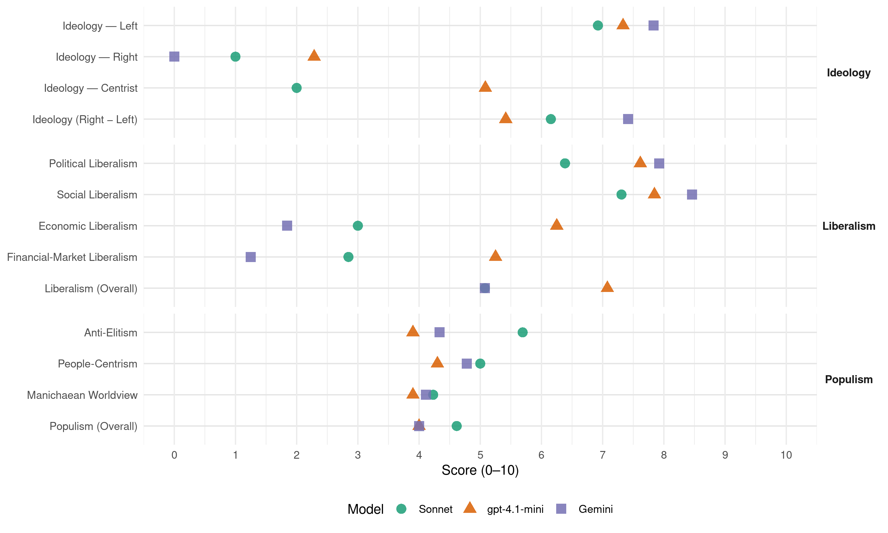

IU (Spain, 2000)
manifesto_id 33220_200003
Get full text: This site shows derived annotations and short verbatim quotes only. The full manifesto text is © Manifesto Project / WZB — obtain it via manifesto-project.wzb.eu using the manifesto_id above.
Headline scores
| Dimension | Sonnet | gpt-4.1-mini | Gemini |
|---|---|---|---|
| Populism (Overall) | 4.6 | 4.0 | 4.0 |
| Anti-Elitism | 5.7 | 3.9 | 4.3 |
| People-Centrism | 5.0 | 4.3 | 4.8 |
| Manichaean Worldview | 4.2 | 3.9 | 4.1 |
| Ideology (Right − Left) | 6.2 | 5.4 | 7.4 |
| Liberalism (Overall) | 5.1 | 7.1 | 5.1 |
| Political Liberalism | 6.4 | 7.6 | 7.9 |
| Social Liberalism | 7.3 | 7.8 | 8.5 |
| Economic Liberalism | 3.0 | 6.2 | 1.8 |
| Financial-Market Liberalism | 2.8 | 5.2 | 1.2 |
Evidence per dimension
Economic Liberalism
Gemini · score 1.0 · verified · chunk 1
“desregulación de la economía y la eliminación”
La desregulación de la economía y la eliminación de todo tipo de reglas
Gemini · score 2.0 · verified · chunk 2
“desregulación y la privatización oligopolista”
la desregulación y la privatización oligopolista crecientes en el sector financiero contribuyen
Gemini · score 2.0 · verified · chunk 3
“intenso proceso de privatizaciones de empresas”
El intenso proceso de privatizaciones de empresas públicas y la liberalización de sectores clave como el energético
Gemini · score 1.0 · verified · chunk 4
“No a la privatización”
necesarios para construir una sociedad sin diferencias sociales o territoriales. No a la privatización de la red de telecomunicaciones
Gemini · score 2.0 · verified · chunk 5
“desregulación del sector energético”
autopistas, más trenes de alta velocidad, y una desregulación del sector energético que estimula el incremento del consumo
Gemini · score 2.0 · verified · chunk 6
“rechazando la privatización de servicios”
como servicio público. Gestionado directamente por el Estado a través de sus diversas Administraciones, rechazando la privatización de servicios y la externalización
Gemini · score 2.0 · verified · chunk 7
“Fiel a su obsesión privatizadora”
El Partido Popular, fiel a su obsesión privatizadora, ha optado a lo largo
Gemini · score 2.0 · verified · chunk 8
“frenar la ofensiva privatizadora de la derecha”
favorables al sistema público, para frenar la ofensiva privatizadora de la derecha política y sus aliados
Gemini · score 2.0 · verified · chunk 9
“intervención democrática en las leyes del Mercado”
en el marco de la potenciación de lo público, de la intervención democrática en las leyes del Mercado, de la distribución solidaria
Gemini · score 2.0 · verified · chunk 10
“IU se opondrá frontalmente a las privatizaciones”
rechazando las posturas neoliberales que propugna el desprestigio de lo público, su reducción y privatización. IU se opondrá frontalmente a las privatizaciones. - La descentralización de las políticas
Gemini · score 2.0 · verified · chunk 11
“un sector industrial público dominante en los sectores estratégicos productivos”
Un sector público financiero preponderante, basado en una sólida banca pública, y un sector industrial público dominante en los sectores estratégicos productivos, y no subsidiario del sector privado
Gemini · score 2.0 · verified · chunk 12
“pretende la actual política neoliberal”
público individualizado, (“al cliente”) en el sentido que pretende la actual política neoliberal. Es más bien
Gemini · score 2.0 · verified · chunk 13
“tendencia clara a la privatización, la especulación”
programas de deporte para todos o de tiempo libre, la modificación de modelos con tendencia clara a la privatización, la especulación y la explotación comercial del fenómeno deportivo obliga
gpt-4.1-mini · score 3.0 · verified · chunk 1
“rechazo de lo público”
- Rechazo de lo público. - Políticas fiscales regresivas. - Destrucción de los mecanismos de protección social. - Pretensión de hegemonía en el pensamiento económico.
gpt-4.1-mini · score 7.0 · verified · chunk 2
“la libertad de empresa en el marco de la economía de mercado”
…La Constitución española en su artículo 38 reconoce la libertad de empresa en el marco de la economía de mercado, pero a su vez vela porque los poderes públicos garanticen y protejan su ejercicio, de acuerdo con las exigencias de la economía y admitiendo de forma explícita la posibilidad de una planificación económica dirigida a una sociedad más libre, justa, igual y plural…
gpt-4.1-mini · score 6.0 · verified · chunk 3
“supeditación de la política de incentivación pública de las actividades privadas de I+D a las prioridades de la política industrial”
Supeditación de la política de incentivación pública de las actividades privadas de I+D a las prioridades de la política industrial y tecnológica definidas por el PNIDI. Evaluación, seguimiento y control de estas acciones.
gpt-4.1-mini · score 6.0 · verified · chunk 4
“mercado financiero de futuros”
…suelo en un activo privilegiado mucho más sujeto a las leyes del “mercado financiero de futuros” que a las conveniencias y a las necesidades colectivas de los ciudadanos. La política de suelo de IU se diseña en torno a: - Establecimiento de un nuevo régimen jurídico del Suelo…
gpt-4.1-mini · score 6.0 · verified · chunk 5
“la política agraria común de la UE ha sido negativa para el medio ambiente porque ha promovido la intensificación y la concentración de cultivos”
El actual modelo agrario no es un modelo válido pues se dirige a cubrir las necesidades del mercado y no a cubrir las necesidades de las poblaciones agrarias. La política agraria común de la UE ha sido negativa para el medio ambiente porque ha promovido la intensificación y la concentración de cultivos, a expensas de usos del suelo agrícola más diversificados y ecológicamente sostenibles.
gpt-4.1-mini · score 7.0 · verified · chunk 7
“fomentar la tan cacareada y poco practicada libre competencia”
Así se podría iniciar el camino de un cierto pluralismo comercial y fomentar la tan cacareada y poco practicada libre competencia.
gpt-4.1-mini · score 7.0 · verified · chunk 8
“desregulación de nuestro mercado laboral, buscando el abaratamiento de costes”
- El incremento del número de inmigrantes se ha producido –y agudizado en los últimos años- como consecuencia de la demanda de mano de obra y en paralelo a la desregulación de nuestro mercado laboral, buscando el abaratamiento de costes o mayores niveles de “competitividad” por esta vía.
gpt-4.1-mini · score 6.0 · verified · chunk 9
“defensa y desarrollo del Estado Social y participativo, garante de la solidaridad y la cohesión social y territorial”
5.3 DEFENSA Y DESARROLLO DEL ESTADO SOCIAL PARTICIPATIVO. El ataque al Estado Social se manifiesta en aspectos como la puesta en cuestión de las políticas expansivas y de pleno empleo, los procesos de mundialización de la economía sin que se creen instituciones políticas supranacionales que garanticen políticas redistributivas y de carácter social, junto con el despliegue de un inmenso aparato de alienación comunicacional sobre el conjunto de la ciudadanía. Se han debilitado de este modo los anclajes del Estado Social como parte de la cultura política y social de los países europeos occidentales, incluso en aquellos en que más arraigo tuvo y/o en los que la cláusula social ha quedado inserta en sus Constituciones y Normas fundamentales bajo la forma de principio básico, como ocurre en el caso español. El Estado Social trata de ser desplazado en el plano económico por una combinación de monetarismo, políticas de oferta y desregulaciones laborales, con objeto de reactivar las tasas de beneficio, y en el social mediante la mercantilización de bienes y servicios públicos (privatizaciones) y defensa y desarrollo del Estado Social y participativo, garante de la solidaridad y la cohesión social y territorial.
gpt-4.1-mini · score 6.0 · verified · chunk 10
“la capacidad fiscal y la autonomía financiera de los Entes Territoriales”
IU propone incrementar la capacidad fiscal y la autonomía financiera de los Entes Territoriales y reducir subsiguientemente el peso de la financiación estatal hasta los niveles que la situación requiera, articulando para ello el gasto a gestionar por las CC.AA y los instrumentos de financiación de estas. Proponemos armonizar la política niveladora de necesidades y la política niveladora de gasto “per cápita”…
gpt-4.1-mini · score 7.0 · verified · chunk 11
“coordinación y armonización del sistema integrado”
…El sistema es integrado en cuanto se articula y es coordinado normativamente por la Federación vía Senado que atenderá a la regulación general, a las competencias normativas en los distintos niveles y a adoptar medidas con el fin de evitar una competencia fiscal que suponga mayor esfuerzo fiscal para los contribuyentes de Estados perdedores en esa competencia.
gpt-4.1-mini · score 7.0 · verified · chunk 12
“la derogación de la normativa que autorizaba las Empresas de Trabajo Temporal, que en la practica vulneran esos derechos”
Reforma de las Leyes Laborales, en especial las relativas a mercado de Trabajo, por contradecir el derecho al trabajo digno y a la remuneración suficiente. En este sentido resulta imprescindible la derogación de la normativa que autorizaba las Empresas de Trabajo Temporal, que en la practica vulneran esos derechos.
gpt-4.1-mini · score 7.0 · verified · chunk 13
“Reducción anual suficiente para llegar al final de la legislatura al 1% del PIB en gasto militar”
…Reducción anual suficiente para llegar al final de la legislatura al 1% del PIB en gasto militar. - Reducción drástica de los programas de I+D militares - Puesta en marcha de planes de reconversión de la industria militar…
Sonnet · score 2.0 · verified · chunk 1
“Espacios económicos y mercados lo más amplios posibles y totalmente desregulados”
Su discurso es simple y podía resumirse en los siguientes puntos: - Libre cambio en el comercio internacional… - Espacios económicos y mercados lo más amplios posibles y totalmente desregulados.
Sonnet · score 3.0 · verified · chunk 2
“las tendencias liberalizadoras agudizan las disfunciones del sector financiero”
Las tendencias liberalizadoras, por lo tanto, agudizan las disfunciones del sector financiero respecto de la economía real
Sonnet · score 3.0 · verified · chunk 3
“liberalización de sectores clave como el energético”
El intenso proceso de privatizaciones de empresas públicas y la liberalización de sectores clave como el energético y de telecomunicaciones, que se refleja en una drástica reducción de su inversión
Sonnet · score 3.0 · verified · chunk 5
“desregulación del sector energético que estimula”
el Gobierno General del Estado continúa con la política de más autopistas, más trenes de alta velocidad, y una desregulación del sector energético que estimula el incremento del consumo de energía
Sonnet · score 3.0 · verified · chunk 6
“políticas neo-liberales y conservadoras”
Frente a las políticas neo-liberales y conservadoras, IU luchará por la socialización de la comunicación como garantía de la igualdad de oportunidades
Sonnet · score 4.0 · verified · chunk 7
“libre competencia”
podría iniciar el camino de un cierto pluralismo comercial y fomentar la tan cacareada y poco practicada libre competencia
Sonnet · score 3.0 · verified · chunk 8
“oposición a la creación de nuevas formas de gestión”
oposición a la creación de nuevas formas de gestión sobre la base del derecho privado, o a la creación de institutos y otras fórmulas híbridas y confusas, así como a la extensión de las subcontrataciones
Sonnet · score 3.0 · verified · chunk 9
“autoregulación del mercado, la primacia de lo privado”
que defienden la autoregulación del mercado, la primacia de lo privado sobre lo público y la drástica disminución de las prestaciones del Estado
Sonnet · score 3.0 · verified · chunk 10
“IU se opondrá frontalmente a las privatizaciones”
rechazando las posturas neoliberales que propugna el desprestigio de lo público, su reducción y privatización. IU se opondrá frontalmente a las privatizaciones
Sonnet · score 3.0 · verified · chunk 11
“promueve la desregulación y privatización de funciones y servicios”
modelo neoliberal… que propugna una reducción de las prestaciones, promueve la desregulación y privatización de funciones y servicios. En este contexto, han dominado respecto a la Administraciones Públicas los llamados procesos de MODERNIZACIÓN
Sonnet · score 3.0 · verified · chunk 12
“derogación de la normativa que autorizaba las Empresas de Trabajo Temporal”
resulta imprescindible la derogación de la normativa que autorizaba las Empresas de Trabajo Temporal, que en la practica vulneran esos derechos.
Sonnet · score 3.0 · verified · chunk 13
“control de los movimientos especulativos”
es necesario un control de los movimientos especulativos y a corto plazo del capital financiero. En ese sentido cobra urgencia la implementación de la Tasa Tobin
Financial-Market Liberalism
Gemini · score 1.0 · verified · chunk 1
“control y fiscalización de los movimientos de capital”
proponemos que la Unión Europea establezca el control y fiscalización de los movimientos de capital para
Gemini · score 1.0 · verified · chunk 2
“sujetando al Banco de España a los mecanismos”
cambiando la regulación de las Cajas y sujetando al Banco de España a los mecanismos generales de regulación
Gemini · score 2.0 · verified · chunk 3
“leyes del”mercado financiero de futuros”“
ha convertido al suelo en un activo privilegiado mucho más sujeto a las leyes del “mercado financiero de futuros” que a las conveniencias
Gemini · score 1.0 · verified · chunk 4
“leyes del”mercado financiero de futuros”“
convertido al suelo en un activo privilegiado mucho más sujeto a las leyes del “mercado financiero de futuros” que a las conveniencias
Gemini · score 1.0 · verified · chunk 5
“rechazar los mercados del agua”
métodos de riego que aprovechen al máximo el agua; - realizar la gestión de agua desde el punto de vista de la demanda; - controlar la calidad del agua; - rechazar los mercados del agua que prevé la Ley
Gemini · score 2.0 · verified · chunk 7
“creación de una banca social”
vida independiente. - Creación de una banca social y/o, alternativamente, creación de
Gemini · score 1.0 · verified · chunk 8
“derogación del secreto bancario, control del”
control aduanero, fiscal y financiero como la derogación del secreto bancario, control del blanqueo de dinero.
Gemini · score 1.0 · verified · chunk 9
“aventureros” de la especulación y las finanzas”
fácil, presentando a “tiburones” y “aventureros” de la especulación y las finanzas como consecuentes a las tendencias de privatización
Gemini · score 2.0 · verified · chunk 10
“dotándose de un sector financiero público”
permitan la planificación económica y social, dotándose de un sector financiero público, no subsidiario del sector privado. - Incrementará el
Gemini · score 1.0 · verified · chunk 11
“un sector público financiero preponderante, basado en una sólida banca pública”
Un sector público financiero preponderante, basado en una sólida banca pública, y un sector industrial público dominante en los sectores estratégicos productivos, y no subsidiario del sector privado
Gemini · score 1.0 · verified · chunk 12
“descarado privilegio procesal para las entidades financieras”
esquema, como ya se ha señalado, revelan una situación de descarado privilegio procesal para las entidades financieras, deben ser reformadas
Gemini · score 1.0 · verified · chunk 13
“control de los movimientos especulativos y a corto plazo del capital financiero”
cambio radical de sus estructuras internas y de sus políticas. Así mismo es necesario un control de los movimientos especulativos y a corto plazo del capital financiero. En ese sentido cobra urgencia la implementación
gpt-4.1-mini · score 3.0 · verified · chunk 1
“libre circulación de capitales”
Desde 1971, año en que Estados Unidos adopta la libre circulación de capitales, poco a poco ésta se va imponiendo en el resto de los países. En la Unión Europea se hace obligatoria a partir de enero de 1989 con la entrada en vigor del Acta Única.
gpt-4.1-mini · score 4.0 · verified · chunk 2
“la desregulación y la privatización oligopolista crecientes en el sector financiero”
…la desregulación y la privatización oligopolista crecientes en el sector financiero contribuyen a que predomine la lógica de la rentabilidad de los capitales financieros, con independencia de cualquier compromiso con la economía real. En un marco internacional de mayor apertura y agilidad en los mercados financieros esta tendencia es muy peligrosa…
gpt-4.1-mini · score 6.0 · verified · chunk 3
“apoyo a mercados de capital-riesgo, a largo plazo y bajo interés, para inversiones en I+D”
Apoyo a mercados de capital-riesgo, a largo plazo y bajo interés, para inversiones en I+D y formación de personal. Negociación sobre la instalación de empresas multinacionales para asegurar una mayor capacidad de decisión en temas tecnológicos en las filiales españolas.
gpt-4.1-mini · score 6.0 · verified · chunk 7
“exigir la transparencia en los asuntos económicos y sociales de todas las empresas propietarias”
Frente al secretismo y opacidad de los grandes monopolios, exigir la transparencia en los asuntos económicos y sociales de todas las empresas propietarias o gestoras de los medios.
gpt-4.1-mini · score 5.0 · verified · chunk 10
“la armonización y normalización tributaria inducida por la presión real del mercado”
No existe un modelo único de financiación en los Estados compuestos. Sin perjuicio de que nos encontremos en el seno de una Europa neoliberal y sujetos a la armonización y normalización tributaria inducida por la presión real del mercado que se viene produciendo en la Unión Europea, a cuyas disposiciones ha de atenerse el Estado español, IU defiende para el futuro Estado Federal una nueva estructura fundamental del reparto de los ingresos…
gpt-4.1-mini · score 6.0 · verified · chunk 11
“ordenación del crédito banca y seguros”
…Aguas, agricultura y ganadería. - Servicio meteorológico. - Protección del desempleo y de los consumidores. - Pesca marítima. - Ordenación del crédito banca y seguros. - Iluminación de costas y señales marítimas, aeropuertos de interés general; control del espacio aéreo, tránsito y transporte aéreo.
gpt-4.1-mini · score 6.0 · verified · chunk 12
“la reforma de la legislación Hipotecaria y de los procedimientos derivados”
Reforma de la legislación Hipotecaria y de los procedimientos derivados. Resulta injusto el mantenimiento de una legislación en la que los poderes económicos detentan un predominio absoluto en la contratación, y además mantienen unos privilegios procesales que desvirtúan el sentido de la institución.
gpt-4.1-mini · score 6.0 · verified · chunk 13
“control de los movimientos especulativos y a corto plazo del capital financiero”
…nuestra presencia en organismos internacionales como la OMC, el BM o el FMI debe encaminarse a producir un cambio radical de sus estructuras internas y de sus políticas. Así mismo es necesario un control de los movimientos especulativos y a corto plazo del capital financiero…
Sonnet · score 2.0 · verified · chunk 1
“mercados financieros en auténticos casinos”
La renuncia por parte de casi la totalidad de los Estados a aplicar cualquier mecanismo de control de cambios… transforma a los mercados financieros en auténticos casinos
Sonnet · score 2.0 · verified · chunk 2
“Control democrático del sistema financiero: evitando las privatizaciones”
Control democrático del sistema financiero: evitando las privatizaciones, cambiando la regulación de las Cajas y sujetando al Banco de España a los mecanismos generales
Sonnet · score 4.0 · verified · chunk 3
“Apoyo a mercados de capital-riesgo, a largo plazo”
Apoyo a mercados de capital-riesgo, a largo plazo y bajo interés, para inversiones en I+D y formación de personal.
Sonnet · score 2.0 · verified · chunk 4
“mercados del agua”
el nuevo marco ha optado por los mercados del agua, ya que se establece la posibilidad de comprar y vender usos privados del agua
Sonnet · score 3.0 · verified · chunk 5
“rechazar los mercados del agua”
rechazar los mercados del agua que prevé la Ley del Agua aprobada en 1999
Sonnet · score 4.0 · verified · chunk 6
“Banco Internacional de Pagos de Basilea provea los mecanismos”
Se crearan las normas contables específicas para que el Banco Internacional de Pagos de Basilea provea los mecanismos a efectos de que los países con problemas de aplicación de la condicionalidad sean desglosados en los balances de operaciones bancarias
Sonnet · score 4.0 · verified · chunk 7
“banca social”
Creación de una banca social y/o, alternativamente, creación de una cuota de inversión social en las cajas de ahorro
Sonnet · score 3.0 · verified · chunk 8
“derogación del secreto bancario, control del blanqueo de dinero”
Lucha contra el narcotráfico, a través de medidas de control aduanero, fiscal y financiero como la derogación del secreto bancario, control del blanqueo de dinero
Sonnet · score 3.0 · verified · chunk 9
“aventureros” de la especulación y las finanzas”
presentando a “tiburones” y “aventureros” de la especulación y las finanzas como consecuentes a las tendencias de privatización y libre mercado
Sonnet · score 3.0 · verified · chunk 10
“dotándose de un sector financiero público”
con suficiente poder redistributivo y nivelador, así como con instrumentos eficaces que permitan la planificación económica y social, dotándose de un sector financiero público, no subsidiario del sector privado
Sonnet · score 2.0 · verified · chunk 11
“sólida banca pública”
Un sector público financiero preponderante, basado en una sólida banca pública, y un sector industrial público dominante en los sectores estratégicos productivos, y no subsidiario del sector privado
Sonnet · score 3.0 · verified · chunk 12
“privilegios procesales que desvirtúan el sentido”
los poderes económicos detentan un predominio absoluto en la contratación, y además mantienen unos privilegios procesales que desvirtúan el sentido de la institución.
Sonnet · score 2.0 · verified · chunk 13
“implementación de la Tasa Tobin o similar”
es necesario un control de los movimientos especulativos y a corto plazo del capital financiero. En ese sentido cobra urgencia la implementación de la Tasa Tobin o similar
Political Liberalism
Gemini · score 8.0 · verified · chunk 1
“instituciones democráticas controlan y regulan”
O bien la democracia y sus instituciones controlan y regulan los mercados, o bien
Gemini · score 8.0 · verified · chunk 2
“Estado social y democrático de Derecho”
El Estado social y democrático de Derecho, definido en la Constitución Española, propugna
Gemini · score 8.0 · verified · chunk 3
“consenso democrático, interautonómico y social”
dependen de dos variables fundamentales: unas políticas científica, industrial y tecnológica activas y coherentes y un amplio consenso democrático, interautonómico y social, sobre los objetivos
Gemini · score 8.0 · verified · chunk 4
“participación democrática”
cohesión o igualdad social y participación democrática, nuestro programa define medidas concretas
Gemini · score 8.0 · verified · chunk 5
“fortalecimiento de las instituciones democráticas”
La transformación de la sociedad desde IU pasa por el fortalecimiento de las instituciones democráticas, con especial protección al desarrollo de las libertades
Gemini · score 8.0 · verified · chunk 6
“fortalecimiento de las instituciones democráticas”
la sociedad desde IU pasa por el fortalecimiento de las instituciones democráticas, con especial protección al
Gemini · score 8.0 · verified · chunk 7
“defensa de la participación democrática”
desde la calle- para promover la defensa de la participación democrática, el libre acceso al patrimonio
Gemini · score 8.0 · verified · chunk 8
“fundamentos de las instituciones legales y del”
proporciones que se tambalean los fundamentos de las instituciones legales y del Estado de Derecho.
Gemini · score 8.0 · verified · chunk 9
“equilibrio entre los diferentes poderes del Estado”
no cumplen su función de control del ejercicio del poder, de equilibrio entre los diferentes poderes del Estado (ejecutivo, legislativo y judicial)
Gemini · score 8.0 · verified · chunk 10
“garantizando el control del ejecutivo por el Parlamento”
mejorando la transparencia en la gestión del Estado y, por último, garantizando el control del ejecutivo por el Parlamento, especialmente en lo referente a modificaciones de
Gemini · score 7.0 · verified · chunk 11
“absoluta vinculación de la Administración a la ley como principio básico del Estado de Derecho”
eje estructurante del sistema administrativo español, cuya importancia es capital, sobre la base de la absoluta vinculación de la Administración a la ley como principio básico del Estado de Derecho, una de las leyes
Gemini · score 8.0 · verified · chunk 12
“independencia y el desempeño de un papel ajustado al orden constitucional”
consecución de una efectiva independencia y el desempeño de un papel ajustado al orden constitucional por parte del
Gemini · score 8.0 · verified · chunk 13
“coordinar y controlar desde el punto de vista democrático”
comunidad de inteligencia” a la que hay que coordinar y controlar desde el punto de vista democrático. Para ello Izquierda Unida propone suprimir
gpt-4.1-mini · score 7.0 · verified · chunk 1
“derechos civiles y políticos”
El avance hacia el socialismo debe hacerse desde la libertad y la democracia, trascendiéndolos, pero nunca anulándolos o destruyéndolos. Libertad, democracia y socialismo se complementan. Los derechos civiles y políticos, sin una participación activa de los ciudadanos en los asuntos públicos,
gpt-4.1-mini · score 8.0 · verified · chunk 2
“la Constitución española en su artículo 38 reconoce la libertad de empresa”
…El texto Constitucional en su artículo 9.2 responsabiliza y encarga a los poderes públicos la tarea de promover las condiciones para que la libertad y la igualdad del individuo y de los grupos en que se integran, sean reales y efectivas… La Constitución española en su artículo 38 reconoce la libertad de empresa en el marco de la economía de mercado…
gpt-4.1-mini · score 7.0 · verified · chunk 3
“la participación social en la planificación y ejecución de la I+D”
Participación social en la planificación y ejecución de la I+D. Creación de un único Consejo Nacional de la Ciencia y la Tecnología de competencias renovadas, con una representación equilibrada de los distintos agentes sociales y Comunidades Autónomas.
gpt-4.1-mini · score 7.0 · verified · chunk 4
“participación democrática”
…criterios básicos de sostenibilidad ecológica, cohesión o igualdad social y participación democrática, nuestro programa define medidas concretas en los campos de: suelo y planeamiento urbanístico, servicios e infraestructuras del transporte…
gpt-4.1-mini · score 7.0 · verified · chunk 5
“fortalecimiento de las instituciones democráticas, con especial protección al desarrollo de las libertades y derechos de los ciudadanos”
La transformación de la sociedad desde IU pasa por el fortalecimiento de las instituciones democráticas, con especial protección al desarrollo de las libertades y derechos de los ciudadanos. Ello significa una vigilancia democrática, continua y dotada de medios suficientes para su ejercicio, para la que se intentarán proponer instrumentos de control sobre comportamientos institucionales que supongan una merma o recorte de esos derechos.
gpt-4.1-mini · score 8.0 · verified · chunk 6
“fortalecimiento de las instituciones democráticas, con especial protección al desarrollo de las libertades y derechos de los ciudadanos”
La transformación de la sociedad desde IU pasa por el fortalecimiento de las instituciones democráticas, con especial protección al desarrollo de las libertades y derechos de los ciudadanos.
gpt-4.1-mini · score 8.0 · verified · chunk 7
“la libertad de decidir democráticamente el uso público de los medios de comunicación”
Frente a los oligopolios multimedia, la libertad de decidir democráticamente el uso público de los medios de comunicación.
gpt-4.1-mini · score 8.0 · verified · chunk 8
“democráticamente entre todos los sectores de la Comunidad Universitaria”
…con una comisión de gobierno elegida democráticamente entre todos los sectores de la Comunidad Universitaria. El período de formación comenzará con la contratación laboral como ayudantes durante el tiempo que se completa el tercer ciclo de estudios universitarios y se realiza la tesis doctoral.
gpt-4.1-mini · score 7.0 · verified · chunk 9
“democratizando los aparatos e instituciones del Estado; anteponiendo la legitimidad y la razón jurídica a la razón de Estado y la corrupción”
La regeneración de la vida democrática sólo será posible: reformando las formas de hacer política; recuperando su concepción sustantiva de debate de alternativas ante los grandes problemas; frenando la tendencia a la autonomía de la denominada “clase política”; reforzando las relaciones representantes-representados; acercando el poder y la capacidad de decisión a las ciudadanas y ciudadanos; desarrollando e impulsando los distintos sujetos sociales presentes en la sociedad civil; democratizando los aparatos e instituciones del Estado; anteponiendo la legitimidad y la razón jurídica a la razón de Estado y la corrupción; dignificando la actividad pública, siendo conscientes de que esta regeneración no será posible sólo con cambios legales o institucionales, sino que deberá acompañarse de un cambio cultural profundo, así como de una autorreforma de los propios partidos políticos.
gpt-4.1-mini · score 8.0 · verified · chunk 10
“garantizar el funcionamiento democrático de los Partidos Políticos”
- Garantizar el funcionamiento democrático de los Partidos Políticos, asegurando condiciones de igualdad de oportunidades en todos los ámbitos, el pluralismo y el equilibrio de sexos. - Establecimiento de un sistema de incompatibilidades y de rotación de cargos. - Establecimiento de mecanismos que aseguren la transparencia financiera y el control del gasto…
gpt-4.1-mini · score 8.0 · verified · chunk 11
“la Administración a la ley como principio básico del Estado de Derecho”
…bloque normativo que constituye el eje estructurante del sistema administrativo español, cuya importancia es capital, sobre la base de la absoluta vinculación de la Administración a la ley como principio básico del Estado de Derecho, una de las leyes más decisivas a este respecto es la Ley 30/92 de Régimen Jurídico de las Administraciones Públicas y Procedimiento Administrativo Común…
gpt-4.1-mini · score 8.0 · verified · chunk 12
“la existencia de una justicia equilibrada, independiente y eficaz”
La acción de gobierno del PP ha marcado la pasada legislatura poniendo el acento en una serie de reformas de baja intensidad que no han supuesto un avance para sentar las bases que hagan realidad en nuestro país la existencia de una justicia equilibrada, independiente y eficaz.
gpt-4.1-mini · score 8.0 · verified · chunk 13
“Los funcionarios de los servicios de información tendrán un estatuto de funcionamiento con todos sus derechos constitucionales”
…Los funcionarios de los servicios de información tendrán un estatuto de funcionamiento con todos sus derechos constitucionales para, entre otros derechos, si reciben ordenes indebidas, poder denunciarlas ante los órganos jurisdiccionales competentes…
Sonnet · score 3.0 · verified · chunk 1
“déficit democrático”
La actual UE tiene un fuerte déficit democrático. Las competencias de la Comisión, con claras deficiencias de legitimidad democrática, son amplísimas
Sonnet · score 6.0 · verified · chunk 2
“Estado social y democrático de Derecho”
El Estado social y democrático de Derecho, definido en la Constitución Española, propugna como valores superiores de su ordenamiento jurídico la libertad, la igualdad
Sonnet · score 6.0 · verified · chunk 3
“Discusión y aprobación en el Parlamento del Plan Nacional”
Discusión y aprobación en el Parlamento del Plan Nacional de Investigación, Desarrollo e Innovación Tecnológica (PNIDI), instrumento único que integre todas las acciones
Sonnet · score 5.0 · verified · chunk 4
“democráticamente desarrollada”
impulsará la planificación urbanística y territorial, democráticamente desarrollada, que satisfaga tres condiciones básicas
Sonnet · score 6.0 · verified · chunk 5
“fortalecimiento de las instituciones democráticas”
La transformación de la sociedad desde IU pasa por el fortalecimiento de las instituciones democráticas, con especial protección al desarrollo de las libertades
Sonnet · score 7.0 · verified · chunk 6
“fortalecimiento de las instituciones democráticas”
La transformación de la sociedad desde IU pasa por el fortalecimiento de las instituciones democráticas, con especial protección al desarrollo de las libertades y derechos de los ciudadanos.
Sonnet · score 7.0 · verified · chunk 7
“democracia participativa”
Frente al reduccionismo bipartidista, la libertad de hacer posible el pluralismo informativo y la democracia participativa
Sonnet · score 7.0 · verified · chunk 8
“principios democráticos”
Apoyo a la libertad de colegiación de los profesionales que trabajan en el sector público, con adaptación de la normativa colegial a los principios democráticos
Sonnet · score 7.0 · verified · chunk 9
“independencia del Poder Judicial”
La garantía de la independencia del Poder Judicial y la consecución de un servicio público de justicia ágil y de calidad.
Sonnet · score 7.0 · verified · chunk 10
“garantizando el control del ejecutivo por el Parlamento”
mejorando los medios a disposición de los Grupos parlamentarios, la transparencia en la gestión del Estado y, por último, garantizando el control del ejecutivo por el Parlamento
Sonnet · score 7.0 · verified · chunk 11
“democratización y la participación ciudadana”
la democratización y la participación ciudadana, junto con una apuesta inequívoca por la sensibilización de la sociedad en la idea de la justicia como servicio público para hacer de la igualdad y la libertad
Sonnet · score 8.0 · verified · chunk 12
“independencia y el desempeño de un papel ajustado al orden constitucional”
siguen siendo objetivos de primer orden la consecución de una efectiva independencia y el desempeño de un papel ajustado al orden constitucional por parte del Poder Judicial
Sonnet · score 7.0 · verified · chunk 13
“controlados políticamente por el Gobierno y Congreso”
Los servicios de inteligencia serán controlados políticamente por el Gobierno y Congreso de los Diputados con una Comisión específica, judicialmente por los jueces
Liberalism (Overall)
Gemini · score 5.0 · verified · chunk 1
“democracia formal, sin unas dosis mínimas”
La democracia formal, sin unas dosis mínimas de igualdad y de control
Gemini · score 5.0 · verified · chunk 2
“Estado social y democrático de Derecho”
El Estado social y democrático de Derecho, definido en la Constitución Española, propugna
Gemini · score 5.0 · verified · chunk 3
“consenso democrático, interautonómico y social”
dependen de dos variables fundamentales: unas políticas científica, industrial y tecnológica activas y coherentes y un amplio consenso democrático, interautonómico y social, sobre los objetivos
Gemini · score 5.0 · verified · chunk 4
“participación democrática”
cohesión o igualdad social y participación democrática, nuestro programa define medidas concretas
Gemini · score 5.0 · verified · chunk 5
“fortalecimiento de las instituciones democráticas”
La transformación de la sociedad desde IU pasa por el fortalecimiento de las instituciones democráticas, con especial protección al desarrollo de las libertades
Gemini · score 6.0 · verified · chunk 6
“fortalecimiento de las instituciones democráticas”
la sociedad desde IU pasa por el fortalecimiento de las instituciones democráticas, con especial protección al
Gemini · score 5.0 · verified · chunk 7
“defensa de la participación democrática”
desde la calle- para promover la defensa de la participación democrática, el libre acceso al patrimonio
Gemini · score 5.0 · verified · chunk 8
“derechos de gays, lesbianas y transexuales”
garantía de no discriminación y respeto a los derechos de gays, lesbianas y transexuales en sus territorios.
Gemini · score 5.0 · verified · chunk 9
“equilibrio entre los diferentes poderes del Estado”
no cumplen su función de control del ejercicio del poder, de equilibrio entre los diferentes poderes del Estado (ejecutivo, legislativo y judicial)
Gemini · score 5.0 · verified · chunk 10
“garante de derechos y libertades fundamentales”
capacidad del Estado para constituirse como poder regulador y corrector del mercado, garante de derechos y libertades fundamentales. Su carácter social, que viene determinado por
Gemini · score 5.0 · verified · chunk 11
“absoluta vinculación de la Administración a la ley como principio básico del Estado de Derecho”
eje estructurante del sistema administrativo español, cuya importancia es capital, sobre la base de la absoluta vinculación de la Administración a la ley como principio básico del Estado de Derecho, una de las leyes
Gemini · score 5.0 · verified · chunk 12
“independencia y el desempeño de un papel ajustado al orden constitucional”
consecución de una efectiva independencia y el desempeño de un papel ajustado al orden constitucional por parte del
Gemini · score 5.0 · verified · chunk 13
“coordinar y controlar desde el punto de vista democrático”
comunidad de inteligencia” a la que hay que coordinar y controlar desde el punto de vista democrático. Para ello Izquierda Unida propone suprimir
gpt-4.1-mini · score 5.0 · verified · chunk 1
“derechos civiles y políticos”
El avance hacia el socialismo debe hacerse desde la libertad y la democracia, trascendiéndolos, pero nunca anulándolos o destruyéndolos. Libertad, democracia y socialismo se complementan. Los derechos civiles y políticos, sin una participación activa de los ciudadanos en los asuntos públicos,
gpt-4.1-mini · score 7.0 · verified · chunk 2
“la Constitución española en su artículo 38 reconoce la libertad de empresa”
…El texto Constitucional en su artículo 9.2 responsabiliza y encarga a los poderes públicos la tarea de promover las condiciones para que la libertad y la igualdad del individuo y de los grupos en que se integran, sean reales y efectivas… La Constitución española en su artículo 38 reconoce la libertad de empresa en el marco de la economía de mercado…
gpt-4.1-mini · score 7.0 · verified · chunk 3
“Participación social en la planificación y ejecución de la I+D”
Participación social en la planificación y ejecución de la I+D. Creación de un único Consejo Nacional de la Ciencia y la Tecnología de competencias renovadas, con una representación equilibrada de los distintos agentes sociales y Comunidades Autónomas.
gpt-4.1-mini · score 7.0 · verified · chunk 4
“participación democrática”
…criterios básicos de sostenibilidad ecológica, cohesión o igualdad social y participación democrática, nuestro programa define medidas concretas en los campos de: suelo y planeamiento urbanístico, servicios e infraestructuras del transporte…
gpt-4.1-mini · score 7.0 · verified · chunk 5
“fortalecimiento de las instituciones democráticas, con especial protección al desarrollo de las libertades y derechos de los ciudadanos”
La transformación de la sociedad desde IU pasa por el fortalecimiento de las instituciones democráticas, con especial protección al desarrollo de las libertades y derechos de los ciudadanos. Ello significa una vigilancia democrática, continua y dotada de medios suficientes para su ejercicio, para la que se intentarán proponer instrumentos de control sobre comportamientos institucionales que supongan una merma o recorte de esos derechos.
gpt-4.1-mini · score 9.0 · verified · chunk 6
“fortalecimiento de las instituciones democráticas, con especial protección al desarrollo de las libertades y derechos de los ciudadanos”
La transformación de la sociedad desde IU pasa por el fortalecimiento de las instituciones democráticas, con especial protección al desarrollo de las libertades y derechos de los ciudadanos.
gpt-4.1-mini · score 8.0 · verified · chunk 7
“la libertad de decidir democráticamente el uso público de los medios de comunicación”
Frente a los oligopolios multimedia, la libertad de decidir democráticamente el uso público de los medios de comunicación.
gpt-4.1-mini · score 8.0 · verified · chunk 8
“democráticamente entre todos los sectores de la Comunidad Universitaria”
…con una comisión de gobierno elegida democráticamente entre todos los sectores de la Comunidad Universitaria. El período de formación comenzará con la contratación laboral como ayudantes durante el tiempo que se completa el tercer ciclo de estudios universitarios y se realiza la tesis doctoral.
gpt-4.1-mini · score 6.0 · verified · chunk 9
“democratizando los aparatos e instituciones del Estado; anteponiendo la legitimidad y la razón jurídica a la razón de Estado y la corrupción”
La regeneración de la vida democrática sólo será posible: reformando las formas de hacer política; recuperando su concepción sustantiva de debate de alternativas ante los grandes problemas; frenando la tendencia a la autonomía de la denominada “clase política”; reforzando las relaciones representantes-representados; acercando el poder y la capacidad de decisión a las ciudadanas y ciudadanos; desarrollando e impulsando los distintos sujetos sociales presentes en la sociedad civil; democratizando los aparatos e instituciones del Estado; anteponiendo la legitimidad y la razón jurídica a la razón de Estado y la corrupción; dignificando la actividad pública, siendo conscientes de que esta regeneración no será posible sólo con cambios legales o institucionales, sino que deberá acompañarse de un cambio cultural profundo, así como de una autorreforma de los propios partidos políticos.
gpt-4.1-mini · score 7.0 · verified · chunk 10
“garantizar el funcionamiento democrático de los Partidos Políticos”
- Garantizar el funcionamiento democrático de los Partidos Políticos, asegurando condiciones de igualdad de oportunidades en todos los ámbitos, el pluralismo y el equilibrio de sexos. - Establecimiento de un sistema de incompatibilidades y de rotación de cargos. - Establecimiento de mecanismos que aseguren la transparencia financiera y el control del gasto…
gpt-4.1-mini · score 7.0 · verified · chunk 11
“la Administración a la ley como principio básico del Estado de Derecho”
…bloque normativo que constituye el eje estructurante del sistema administrativo español, cuya importancia es capital, sobre la base de la absoluta vinculación de la Administración a la ley como principio básico del Estado de Derecho, una de las leyes más decisivas a este respecto es la Ley 30/92 de Régimen Jurídico de las Administraciones Públicas y Procedimiento Administrativo Común…
gpt-4.1-mini · score 7.0 · verified · chunk 12
“la existencia de una justicia equilibrada, independiente y eficaz”
La acción de gobierno del PP ha marcado la pasada legislatura poniendo el acento en una serie de reformas de baja intensidad que no han supuesto un avance para sentar las bases que hagan realidad en nuestro país la existencia de una justicia equilibrada, independiente y eficaz.
gpt-4.1-mini · score 7.0 · verified · chunk 13
“Los funcionarios de los servicios de información tendrán un estatuto de funcionamiento con todos sus derechos constitucionales”
…Los funcionarios de los servicios de información tendrán un estatuto de funcionamiento con todos sus derechos constitucionales para, entre otros derechos, si reciben ordenes indebidas, poder denunciarlas ante los órganos jurisdiccionales competentes…
Sonnet · score 3.0 · verified · chunk 1
“la desregulación y la liberalización”
Frente a los poderes que se imponen a través de la desregulación y la liberalización, IU propone la necesidad de introducir la democracia en la economía
Sonnet · score 4.0 · verified · chunk 2
“la libertad de empresa en el marco de la economía de mercado”
La Constitución española en su artículo 38 reconoce la libertad de empresa en el marco de la economía de mercado, pero a su vez vela porque los poderes públicos garanticen
Sonnet · score 5.0 · verified · chunk 3
“Discusión y aprobación en el Parlamento del Plan Nacional”
Discusión y aprobación en el Parlamento del Plan Nacional de Investigación, Desarrollo e Innovación Tecnológica (PNIDI)
Sonnet · score 4.0 · verified · chunk 4
“No a la privatización encubierta”
No a la transformación de Correos en un grupo de empresas. No a la privatización encubierta. El Gobierno ha creado varias sociedades anónimas
Sonnet · score 5.0 · verified · chunk 5
“fortalecimiento de las instituciones democráticas”
La transformación de la sociedad desde IU pasa por el fortalecimiento de las instituciones democráticas, con especial protección al desarrollo de las libertades
Sonnet · score 6.0 · verified · chunk 6
“libertades y derechos ciudadanos constituye una pieza angular”
IZQUIERDA UNIDA considera que la defensa de las libertades y de los derechos ciudadanos constituye una pieza angular de un proyecto político de izquierdas
Sonnet · score 6.0 · verified · chunk 7
“democracia participativa”
Frente al reduccionismo bipartidista, la libertad de hacer posible el pluralismo informativo y la democracia participativa
Sonnet · score 6.0 · verified · chunk 8
“igualdad de derechos con éste”
una ley de parejas de hecho que regule las relaciones afectivosexuales distintas al matrimonio en igualdad de derechos con éste, de forma que se reconozca a todas las parejas, independientemente de su orientación y opción sexual
Sonnet · score 6.0 · verified · chunk 9
“plena equiparación legal y social”
se sigue negando la plena equiparación legal y social a las opciones afectivo-sexuales distintas a la heterosexual
Sonnet · score 5.0 · verified · chunk 10
“respeto de los principios democráticos del Estado de Derecho”
Democratizándolas, mediante su apertura a la sociedad, el respeto de los principios democráticos del Estado de Derecho, la transparencia en las decisiones
Sonnet · score 5.0 · verified · chunk 11
“democratización y la participación ciudadana”
la democratización y la participación ciudadana, junto con una apuesta inequívoca por la sensibilización de la sociedad en la idea de la justicia como servicio público
Sonnet · score 6.0 · verified · chunk 12
“democratización y la participación ciudadana”
la democratización y la participación ciudadana, junto con una apuesta inequívoca por la sensibilización de la sociedad en la idea de la justicia como servicio público
Sonnet · score 5.0 · verified · chunk 13
“democratizándolas profundamente”
debe restablecerse el monopolio de poder y decisión a las Naciones Unidas, fortaleciéndolas y democratizándolas profundamente
Anti-Elitism
Gemini · score 8.0 · verified · chunk 1
“pretensión de las oligarquías y clases privilegiadas”
retrotrae a la vieja pretensión de las oligarquías y clases privilegiadas de independizar la economía
Gemini · score 3.0 · verified · chunk 2
“consentido desde las instancias del poder”
El dinero negro es un fenómeno consentido desde las instancias del poder y amparado y potenciado por las instituciones
Gemini · score 3.0 · verified · chunk 3
“concesiones que sólo beneficien a la oligarquía”
se opondrá a la realización de concesiones que sólo beneficien a la oligarquía. Tal es el caso del acuerdo con Marruecos
Gemini · score 4.0 · verified · chunk 4
“un buen negocio para los de siempre”
privatización de los servicios rentables (un buen negocio para los de siempre) y quedará un servicio público mínimo
Gemini · score 4.0 · verified · chunk 5
“especuladores de la agricultura”
pesetas anuales en manos de los especuladores de la agricultura, que no de las personas que trabajan
Gemini · score 4.0 · verified · chunk 6
“banalizarla o convertirla en propaganda institucional”
gobernantes, que han tendido a banalizarla o convertirla en propaganda institucional, cuando no en un medio
Gemini · score 7.0 · verified · chunk 7
“Frente a los oligopolios multimedia”
vitalmente provechoso. - Frente a los oligopolios multimedia, la libertad de decidir democráticamente
Gemini · score 4.0 · verified · chunk 8
“ofensiva privatizadora de la derecha política”
frenar la ofensiva privatizadora de la derecha política y sus aliados, que pretende, en vez de
Gemini · score 4.0 · verified · chunk 9
“abuso de poder, generadores de descrédito”
fenómenos de largo alcance en términos de corrupción, perversión política, tráfico de influencias y abuso de poder, generadores de descrédito de las instituciones
Gemini · score 4.0 · verified · chunk 10
“negociaciones bilaterales entre determinadas elites políticas”
más allá de la situación particular de cada CA o de las negociaciones bilaterales entre determinadas elites políticas. Por esa razón IU ha decidido desarrollar
Gemini · score 4.0 · verified · chunk 11
“modelo predominante es el neoliberal, introducido en España por el PSOE y potenciado plenamente por el PP”
En la actualidad, el modelo predominante es el neoliberal, introducido en España por el PSOE y potenciado plenamente por el PP en las Administraciones que gobierna, que propugna una reducción de las prestaciones
Gemini · score 3.0 · verified · chunk 12
“clientelismos, tutelajes políticos y dependencias”
vía subvenciones, generadoras de clientelismos, tutelajes políticos y dependencias. La concepción activa
gpt-4.1-mini · score 2.0 · verified · chunk 1
“la rebelión de los ricos”
lo político. Porque detrás de ese magma de sofismas y falacias económicas lo que en el fondo se esconde es una pretensión política, la rebelión de los ricos. Las clases pudientes de la sociedad consideraron que se había ido demasiado lejos en el camino de la igualdad y de la democracia, y juzgaron ineludible una vuelta atrás.
gpt-4.1-mini · score 6.0 · verified · chunk 2
“el dinero negro es un fenómeno consentido desde las instancias del poder”
…se propicia que determinadas rentas permanezcan ocultas. El dinero negro es un fenómeno consentido desde las instancias del poder y amparado y potenciado por las instituciones financieras5. La evasión fiscal se ve también favorecida…
gpt-4.1-mini · score 6.0 · verified · chunk 3
“un modelo de desarrollo tecnológico inadecuado a nuestra realidad social”
En nuestro país la adopción de un modelo de desarrollo tecnológico inadecuado a nuestra realidad social, ha supuesto la pérdida de una oportunidad histórica de incorporar la actividad científica y técnica como ejes de un desarrollo social más armónico.
gpt-4.1-mini · score 3.0 · verified · chunk 4
“un buen negocio para los de siempre”
…privatización de los servicios rentables (un buen negocio para los de siempre) y quedará un servicio público mínimo a cargo del Estado pero con gestión privada. El Gobierno, a través del Director General, ya anunció que convertiría a Correos en una sociedad anónima…
gpt-4.1-mini · score 3.0 · verified · chunk 6
“los gobiernos del PSOE y, especialmente, el actual del PP, han mantenido una política autoritaria”
Los distintos gobiernos del PSOE y, especialmente, el actual del PP, han mantenido una política autoritaria, de ataque a las libertades fundamentales y a los derechos humanos, intolerable en una sociedad democrática.
gpt-4.1-mini · score 7.0 · verified · chunk 7
“Frente al secretismo y opacidad de los grandes monopolios”
Frente al secretismo y opacidad de los grandes monopolios, exigir la transparencia en los asuntos económicos y sociales de todas las empresas propietarias o gestoras de los medios.
gpt-4.1-mini · score 3.0 · verified · chunk 9
“fenómenos de largo alcance en términos de corrupción, perversión política, tráfico de influencias y abuso de poder”
Por una parte, subsisten fenómenos de largo alcance en términos de corrupción, perversión política, tráfico de influencias y abuso de poder, generadores de descrédito de las instituciones democráticas y de la aparición de brotes populistas o de corte semifascista, ( GIL, y otros ) y por otro lado, se desarrolla una intensa campaña de desprestigio de lo público, cuyo fin último es poner en cuestión la posibilidad de que las ciudadanas y ciudadanos organicen su convivencia en base a valores colectivos, como la solidaridad, la justicia, la equidad, la participación, etc.
gpt-4.1-mini · score 3.0 · verified · chunk 10
“concentración de poder económico, político y mediático en una minoría”
…profundizado en los últimos tiempos como consecuencia de una serie de cambios que están sirviendo a una amenazante tendencia hacia la concentración de poder económico, político y mediático en una minoría que aspira a consolidar una hegemonía neoliberal a escala planetaria. La “globalización” de la economía capitalista…
gpt-4.1-mini · score 2.0 · verified · chunk 11
“el capital privado nunca atiende a razones de equidad social”
…imposible que sólo mediante políticas fiscales podamos compensar los desequilibrios sociales y territoriales que genera este sistema, pues el capital privado nunca atiende a razones de equidad social o equilibrio territorial a la hora de decidir sus inversiones, sino exclusivamente a razones de rentabilidad particular. Es por ello que en cualquier forma de estado, y particularmente en un modelo federal solidario, el sector público de la economía es determinante a la hora de luchar contra las desigualdades.
gpt-4.1-mini · score 4.0 · verified · chunk 12
“la manipulación o instrumentalización de los colectivos vía subvenciones, generadoras de clientelismos, tutelajes políticos y dependencias”
…la gestión social que supone la intervención directa de colectivos implicados en el problema, tales como ONGs, asociaciones sin ánimo de lucro etc., aporta elementos de creatividad, dedicación vocacional y esquemas desinstitucionalizados de actuación que han de ser tenidos en cuenta para su desarrollo. Es una concepción a confrontar con la manipulación o instrumentalización de los colectivos vía subvenciones, generadoras de clientelismos, tutelajes políticos y dependencias. La concepción activa de la gestión social está basada en programas y objetivos coherentes…
gpt-4.1-mini · score 5.0 · mixed · chunk 13
“impedir la venta de material militar a los países que vulneran los Derechos Humanos”
…reclamar la transparencia y el control en cuanto a la exportación y producción de armamento, divulgar los productos vendidos e impedir la venta de material militar a los países que vulneran los Derechos Humanos según el Código de Conducta existente en la UE…
Sonnet · score 8.0 · verified · chunk 1
“la rebelión de los ricos”
lo que en el fondo se esconde es una pretensión política, la rebelión de los ricos. Las clases pudientes de la sociedad consideraron que se había ido demasiado lejos
Sonnet · score 6.0 · verified · chunk 2
“el gran beneficiario de los años de crecimiento ha sido el sector financiero”
Entre todos los sectores económicos españoles el gran beneficiario de los años de crecimiento ha sido el sector financiero, especialmente la gran banca privada.
Sonnet · score 6.0 · verified · chunk 3
“Limitación del protagonismo de los grandes grupos industriales”
en la fijación de la política tecnológica. Democratización de la gestión de los programas de I+D.
Sonnet · score 6.0 · verified · chunk 4
“un buen negocio para los de siempre”
facilitar así la privatización de los servicios rentables (un buen negocio para los de siempre) y quedará un servicio público mínimo
Sonnet · score 5.0 · verified · chunk 5
“poderosas empresas transnacionales de la industria química”
frente a la influencia ejercida desde las poderosas empresas transnacionales de la industria química y de la agroalimentación
Sonnet · score 7.0 · verified · chunk 6
“Las grandes corporaciones financieras y mercantiles, los gobiernos y ejércitos a su servicio”
tienen la llave de los modernos medios de comunicación y son también los dueños del ciberespacio. Las grandes corporaciones financieras y mercantiles, los gobiernos y ejércitos a su servicio, tienen la llave
Sonnet · score 6.0 · verified · chunk 7
“oligopolios multimedia”
Frente a los oligopolios multimedia, la libertad de decidir democráticamente el uso público de los medios de comunicación
Sonnet · score 6.0 · verified · chunk 8
“recetas emanadas desde los centros ideológicos del neoliberalismo”
bajo conceptos de eficiencia, autonomía de gestión, incentivación, competitividad, etc., conceptos todos ellos situados en el ámbito de las recetas emanadas desde los centros ideológicos del neoliberalismo, y que cuentan con un significativo apoyo entre una parte de la socialdemocracia
Sonnet · score 6.0 · verified · chunk 9
“hegemonía de las ideologías neoliberales y conservadoras”
asistimos a la hegemonía de las ideologías neoliberales y conservadoras, en algunos casos bajo la travestida forma de “tercera vía”, que defienden la autoregulación del mercado
Sonnet · score 5.0 · verified · chunk 10
“negociaciones bilaterales entre determinadas elites políticas”
sólo pueden ser abordados dentro de un marco más general… más allá de la situación particular de cada CA o de las negociaciones bilaterales entre determinadas elites políticas
Sonnet · score 4.0 · verified · chunk 11
“modelo neoliberal, introducido en España por el PSOE y potenciado plenamente por el PP”
En la actualidad, el modelo prodominante es el neoliberal, introducido en España por el PSOE y potenciado plenamente por el PP en las Administraciones que gobierna, que propugna una reducción de las prestaciones
Sonnet · score 5.0 · verified · chunk 12
“clientelismo judicial, hasta unos intentos de interferencia”
propiciando actitudes que van desde un claro proceder en términos de clientelismo judicial, hasta unos intentos de interferencia a través de un Fiscal General sometido al Gobierno
Sonnet · score 4.0 · verified · chunk 13
“multinacionales (entre ellas las españolas”
derechos de los pueblos indígenas, insuficientemente reconocidos en la ONU, y vulnerados cada día por multinacionales (entre ellas las españolas Banco de Santander, BBV,Endesa, Repsol,Sanitas, Telefónica,etc…)
Ideology — Centrist
gpt-4.1-mini · score 4.0 · verified · chunk 1
“la democracia formal, sin unas dosis mínimas de igualdad”
La democracia formal, sin unas dosis mínimas de igualdad y de control democrático del poder económico, deviene en dictadura de la clase dominante.
gpt-4.1-mini · score 6.0 · verified · chunk 2
“democratizar la política económica supone explicitar estos modelos”
…Democratizar la política económica supone explicitar estos modelos y que los conflictos de intereses y los acuerdos se adopten en instancias democráticas y participativas. IU propone a los Consejos Económicos, Ecológicos y Sociales (Estatal y Autonómicos) como una vía para articular una planificación democrática…
gpt-4.1-mini · score 6.0 · verified · chunk 3
“la sociedad española, en el umbral del siglo XXI, aparece como receptora inerme de un modelo incapaz de resolver nuestros problemas clave”
La sociedad española, en el umbral del siglo XXI, aparece como receptora inerme de un modelo incapaz de resolver nuestros problemas clave: la tasa de desempleo, la falta de cohesión geográfica y social, temas medioambientales como la utilización del agua, la desertificación o las opciones sobre desarrollo energético.
gpt-4.1-mini · score 5.0 · verified · chunk 4
“la participación ciudadana al mero trámite administrativo”
…se reduce la participación ciudadana al mero trámite administrativo y se sustituye el movimiento asociativo por el de consumidores. Frente a ello habría que oponer otro modelo que puede chocar con los valores dominantes…
gpt-4.1-mini · score 3.0 · verified · chunk 6
“la audiencia puede aumentar cuando los contenidos expresan lo que dice el pueblo”
La audiencia puede aumentar cuando los contenidos expresan lo que dice el pueblo y no sólo lo que cuentan sus representantes. La producción orientada por las cuotas de audiencia está muy limitada y elude la realidad.
gpt-4.1-mini · score 5.0 · verified · chunk 7
“democratización y participación son dos retos pendientes”
Democratización y participación son dos retos pendientes, por lo que se insta a todos los movimientos ciudadanos para que profundicen en el conocimiento de los mismos, a fin de que exijan los cambios necesarios a los Organismos Públicos competentes sobre la necesidad de su colaboración para poder llevar a cabo estos procesos, lo que implica a todos los agentes: políticos, profesionales, sindicatos, empresariado y ONG´s, desde la independencia de las partes y a través de la negociación.
gpt-4.1-mini · score 5.0 · verified · chunk 8
“participación de la población, son elementos fundamentales”
…financiación a partir de los Presupuestos Generales del Estado, y en el que la descentralización administrativa y de recursos, junto con la participación de la población, son elementos fundamentales.
gpt-4.1-mini · score 5.0 · verified · chunk 9
“potenciar el desarrollo de los distintos sujetos sociales presentes en la sociedad civil”
La regeneración de la vida democrática sólo será posible: reformando las formas de hacer política; recuperando su concepción sustantiva de debate de alternativas ante los grandes problemas; frenando la tendencia a la autonomía de la denominada “clase política”; reforzando las relaciones representantes-representados; acercando el poder y la capacidad de decisión a las ciudadanas y ciudadanos; desarrollando e impulsando los distintos sujetos sociales presentes en la sociedad civil; democratizando los aparatos e instituciones del Estado; anteponiendo la legitimidad y la razón jurídica a la razón de Estado y la corrupción; dignificando la actividad pública, siendo conscientes de que esta regeneración no será posible sólo con cambios legales o institucionales, sino que deberá acompañarse de un cambio cultural profundo, así como de una autorreforma de los propios partidos políticos.
gpt-4.1-mini · score 6.0 · verified · chunk 10
“protagonismo de la voluntad popular expresada mediante referéndum”
Dicho Estado debe reunir las siguientes características: - Se basa en el protagonismo de la voluntad popular expresada mediante referéndum y, por tanto, libre y voluntaria adhesión a la forma política resultante de la creación del Estado Federal. El hecho de pertenecer a una nación…
gpt-4.1-mini · score 5.0 · verified · chunk 11
“la ciudadanía concebida de este modo, se aleja de la idea de”súbdito del Estado”“
…sino que se fusiona con la de miembro de la comunidad. Las medidas de reforma que IU propone implican un cambio en profundidad de las estructuras y organización de las Administraciones, de sus aspectos funcionales y de los procedimientos, de las leyes que las informan, del modelo de función pública actual; implica, pues, un cambio de cultura de gobernantes, directivos y empleados públicos en general, respecto a sus relaciones con la sociedad y con las ciudadanas y ciudadanos.
gpt-4.1-mini · score 6.0 · verified · chunk 12
“la participación de los agentes sociales, asociaciones y colectivos en la planificación, desarrollo y control de las políticas”
El compromiso de IU con el desarrollo de políticas activas de fomento de la participación como componete central del proceso de descentralización política y reforma de las administraciones públicas, contempla los siguientes criterios: - Participación de los agentes sociales, asociaciones y colectivos en la planificación, desarrollo y control de las políticas de fomento de la participación a través de comisiones específicas.
gpt-4.1-mini · score 5.0 · verified · chunk 13
“la participación ciudadana y la no discriminación”
…Los diferentes programas deberán apoyarse sobre el movimiento asociativo garantizando la participación ciudadana y la no discriminación…
Sonnet · score 2.0 · verified · chunk 1
“Optamos claramente por otra política”
OPTAMOS CLARAMENTE POR OTRA POLÍTICA ECONÓMICA Y SOCIAL. Optamos claramente por otra política, pero desde la realidad presente
Sonnet · score 2.0 · verified · chunk 2
“Democratizar la política económica supone explicitar estos modelos”
Democratizar la política económica supone explicitar estos modelos y que los conflictos de intereses y los acuerdos se adopten en instancias democráticas
Sonnet · score 2.0 · verified · chunk 3
“amplio consenso democrático, interautonómico y social”
dependen de dos variables fundamentales: unas políticas científica, industrial y tecnológica activas y coherentes y un amplio consenso democrático, interautonómico y social
Sonnet · score 2.0 · verified · chunk 4
“facilitar su acceso a todos los ciudadanos”
Todos estos servicios también deben ser considerados como servicio universal y por tanto facilitar su acceso a todos los ciudadanos.
Sonnet · score 2.0 · verified · chunk 5
“participación ciudadana en la gestión de lo común”
Pretendemos impulsar la participación ciudadana en la gestión de lo común y público.
Sonnet · score 2.0 · verified · chunk 6
“defensa de los derechos ciudadanos constituye una pieza angular”
IZQUIERDA UNIDA considera que la defensa de las libertades y de los derechos ciudadanos constituye una pieza angular de un proyecto político de izquierdas
Sonnet · score 2.0 · verified · chunk 7
“pluralismo informativo y la democracia participativa”
Frente al reduccionismo bipartidista, la libertad de hacer posible el pluralismo informativo y la democracia participativa
Sonnet · score 2.0 · verified · chunk 8
“debate público, tanto en nuestro país”
Izquierda Unida piensa que es necesario abrir un debate público, tanto en nuestro país como a nivel internacional
Sonnet · score 2.0 · verified · chunk 9
“democracia, la libertad, la equidad y la solidaridad”
Nuestra propuesta tiene como valores ideológicos preferentes la democracia, la libertad, la equidad y la solidaridad.
Sonnet · score 2.0 · verified · chunk 10
“transparencia en las decisiones”
Democratizándolas, mediante su apertura a la sociedad, el respeto de los principios democráticos del Estado de Derecho, la transparencia en las decisiones
Sonnet · score 2.0 · verified · chunk 11
“intereses de la mayoría”
IU denuncia su anclaje ideológico y político claramente contrario a los intereses de la mayoría, y se compromete con una estrategia alternativa
Sonnet · score 2.0 · verified · chunk 12
“interés colectivo social”
El Parlamento es la representación de la soberanía popular y el Fiscal asume la defensa del interés colectivo social.
Sonnet · score 2.0 · verified · chunk 13
“control democrático y participativo”
Conversión de la Deuda Externa en Fondos de desarrollo económico-sociales en los países deudores a través de instrumentos que garanticen su control democrático y participativo
Ideology — Left
Gemini · score 9.0 · verified · chunk 1
“avanzar en pos de una mayor igualdad”
un camino a seguir y en el que avanzar en pos de una mayor igualdad, igualdad que no
Gemini · score 8.0 · verified · chunk 2
“potenciar la capacidad redistributiva del Estado”
Fortalecer estos tributos es potenciar la capacidad redistributiva del Estado y cumplir con efectividad lo principios de progresividad
Gemini · score 7.0 · verified · chunk 3
“concesiones que sólo beneficien a la oligarquía”
se opondrá a la realización de concesiones que sólo beneficien a la oligarquía. Tal es el caso del acuerdo con Marruecos
Gemini · score 8.0 · verified · chunk 4
“neoliberalismo extremo que ha venido a agudizar”
se ha centrado en la consolidación del llamado neoliberalismo extremo que ha venido a agudizar tendencias y pautas comenzadas por el PSOE
Gemini · score 6.0 · verified · chunk 5
“poderosas empresas transnacionales de la industria”
protagonismo en la producción de alimentos frente a la influencia ejercida desde las poderosas empresas transnacionales de la industria química y de la agroalimentación.
Gemini · score 8.0 · verified · chunk 6
“arrebatar a la clase dominante los instrumentos”
mundial no será posible sin arrebatar a la clase dominante los instrumentos ideológicos que les garantizan
Gemini · score 8.0 · verified · chunk 7
“el Estado ha de asumir su compromiso de reparto y solidaridad”
irrenunciable para la izquierda, y el Estado ha de asumir su compromiso de reparto y solidaridad, función esencial del mismo.
Gemini · score 8.0 · verified · chunk 8
“frenar la ofensiva privatizadora de la derecha”
favorables al sistema público, para frenar la ofensiva privatizadora de la derecha política y sus aliados
Gemini · score 8.0 · verified · chunk 9
“hegemonía de las ideologías neoliberales y conservadoras”
crisis” del Estado del Bienestar, asistimos a la hegemonía de las ideologías neoliberales y conservadoras, en algunos casos bajo la travestida forma
Gemini · score 8.0 · verified · chunk 10
“ofensiva de los sectores neoliberales y conservadores”
El problema del Estado Social hay que contemplarlo, fundamentalmente, de una parte como ofensiva de los sectores neoliberales y conservadores, a nivel internacional, para eliminar definitivamente
Gemini · score 8.0 · verified · chunk 11
“un sector público financiero preponderante, basado en una sólida banca pública”
Un sector público financiero preponderante, basado en una sólida banca pública, y un sector industrial público dominante en los sectores estratégicos productivos, y no subsidiario del sector privado
Gemini · score 8.0 · verified · chunk 12
“izquierda transformadora que IU representa”
Desde la perspectiva de la izquierda transformadora que IU representa, siguen siendo objetivos
gpt-4.1-mini · score 8.0 · verified · chunk 1
“optamos por el socialismo”
Optamos por el socialismo, pero no como el diseño de una sociedad construido en la pura abstracción y al margen de la realidad, sino como un proceso, un camino a seguir y en el que avanzar en pos de una mayor igualdad,
gpt-4.1-mini · score 8.0 · verified · chunk 2
“la progresividad del sistema, su carácter redistributivo”
…la verdadera finalidad de aquéllos que se inclinan por los impuestos indirectos, y en contra de los directos, es la de reducir o minimizar la progresividad del sistema, su carácter redistributivo. Sus ataques se dirigen de forma especial hacia el impuesto personal sobre la renta…
gpt-4.1-mini · score 7.0 · verified · chunk 3
“abandono del productivismo a ultranza”
Izquierda Unida considera fundamental que la seguridad alimentaria debe ser una prioridad que no se corrije únicamente creando agencias, sino que es necesario imponer un cambio de rumbo a la PAC, abandonando el productivismo a ultranza.
gpt-4.1-mini · score 7.0 · verified · chunk 4
“servicios públicos como el postal sean servicios de calidad con una oferta amplia de servicios y que se presten con criterios sociales y no economicistas”
…necesario que servicios públicos como el postal sean servicios de calidad con una oferta amplia de servicios y que se presten con criterios sociales y no economicistas. - Inversiones extraordinarias de 200.000 millones en infraestructuras para: - acabar con el servicio tan desigual que presta Correos…
gpt-4.1-mini · score 7.0 · verified · chunk 6
“la defensa de las libertades y de los derechos ciudadanos constituye una pieza angular de un proyecto político de izquierdas”
IZQUIERDA UNIDA considera que la defensa de las libertades y de los derechos ciudadanos constituye una pieza angular de un proyecto político de izquierdas, por lo que se compromete a la defensa y desarrollo de los mismos.
gpt-4.1-mini · score 8.0 · verified · chunk 7
“incremento de las políticas de salud, educación, seguridad social y fomento el empleo”
Por ello IU propone: - Un incremento de las políticas de salud, educación, seguridad social y fomento el empleo, integradas en un modelo único, que dé respuesta a las necesidades de las personas, seres integrales no sectorizados, para lo que es necesario directrices políticas comunes, suficientes medidas de coordinación, y servicios comunes que eviten duplicidades, despilfarro y carencias.
gpt-4.1-mini · score 7.0 · verified · chunk 8
“Izquierda Unida trató de combatir, oponiéndose tanto desde el Parlamento”
Izquierda Unida trató de combatir, oponiéndose tanto desde el Parlamento –voto en contra de la Ley 15/97, abandono de la Comisión Parlamentaria para la Reforma y Mejora del Sistema Sanitario, participación en la creación de frentes de oposición parlamentaria a la política de privatización, oposición parlamentaria nítida a cualquier medida que busque deteriorar el sistema público y potenciar el privado, etc.
gpt-4.1-mini · score 7.0 · verified · chunk 9
“defensa y desarrollo del Estado Social y participativo, garante de la solidaridad y la cohesión social y territorial”
5.3 DEFENSA Y DESARROLLO DEL ESTADO SOCIAL PARTICIPATIVO. El ataque al Estado Social se manifiesta en aspectos como la puesta en cuestión de las políticas expansivas y de pleno empleo, los procesos de mundialización de la economía sin que se creen instituciones políticas supranacionales que garanticen políticas redistributivas y de carácter social, junto con el despliegue de un inmenso aparato de alienación comunicacional sobre el conjunto de la ciudadanía. Se han debilitado de este modo los anclajes del Estado Social como parte de la cultura política y social de los países europeos occidentales, incluso en aquellos en que más arraigo tuvo y/o en los que la cláusula social ha quedado inserta en sus Constituciones y Normas fundamentales bajo la forma de principio básico, como ocurre en el caso español. El Estado Social trata de ser desplazado en el plano económico por una combinación de monetarismo, políticas de oferta y desregulaciones laborales, con objeto de reactivar las tasas de beneficio, y en el social mediante la mercantilización de bienes y servicios públicos (privatizaciones) y defensa y desarrollo del Estado Social y participativo, garante de la solidaridad y la cohesión social y territorial.
gpt-4.1-mini · score 8.0 · verified · chunk 10
“defiende la función social del Estado y se reclama como una fuerza defensora de lo público”
Frente a estos planteamientos neoliberales, IZQUIERDA UNIDA defiende la función social del Estado y se reclama como una fuerza defensora de lo público, entendiendo que debe ser el interés público, como fuente lógica de integración social, el que oriente las decisiones políticas fundamentales. El modelo que proponemos…
gpt-4.1-mini · score 7.0 · verified · chunk 11
“un sector público financiero preponderante, basado en una sólida banca pública”
…un sector público financiero preponderante, basado en una sólida banca pública, y un sector industrial público dominante en los sectores estratégicos productivos, y no subsidiario del sector privado, son el requisito imprescindible para lograr que el Estado Federal pueda desarrollar una verdadera política de planificación democrática de la economía en base a las necesidades sociales.
gpt-4.1-mini · score 7.0 · verified · chunk 12
“la derogación de la normativa que autorizaba las Empresas de Trabajo Temporal, que en la practica vulneran esos derechos”
Reforma de las Leyes Laborales, en especial las relativas a mercado de Trabajo, por contradecir el derecho al trabajo digno y a la remuneración suficiente. En este sentido resulta imprescindible la derogación de la normativa que autorizaba las Empresas de Trabajo Temporal, que en la practica vulneran esos derechos.
gpt-4.1-mini · score 7.0 · verified · chunk 13
“Condonar la Deuda Externa Pública que tienen los países del Sur”
…Condonación de la Deuda Externa Pública que tienen los países del Sur con el Estado Español: Conversión de la Deuda Externa en Fondos de desarrollo económico-sociales…
Sonnet · score 9.0 · verified · chunk 1
“Todo el socialismo posible, sólo el mercado necesario”
Se trata más bien de introducir en cada época dada la dosis de socialismo que la sociedad es capaz de asimilar y los condicionantes políticos permiten. Todo el socialismo posible, sólo el mercado necesario.
Sonnet · score 7.0 · verified · chunk 2
“potenciar la capacidad redistributiva del Estado”
Fortalecer estos tributos es potenciar la capacidad redistributiva del Estado y cumplir con efectividad los principios de progresividad y capacidad económica.
Sonnet · score 7.0 · verified · chunk 3
“intenso proceso de privatizaciones de empresas públicas”
El intenso proceso de privatizaciones de empresas públicas y la liberalización de sectores clave como el energético y de telecomunicaciones, que se refleja en una drástica reducción de su inversión
Sonnet · score 7.0 · verified · chunk 4
“No a la privatización encubierta”
No a la transformación de Correos en un grupo de empresas. No a la privatización encubierta. El Gobierno ha creado varias sociedades anónimas
Sonnet · score 6.0 · verified · chunk 5
“promover la agricultura familiar de pequeñas y medianas explotaciones”
promover la agricultura familiar de pequeñas y medianas explotaciones y el cooperativismo, de mayor interés social y medioambiental, frente a la gran empresa agraria
Sonnet · score 8.0 · verified · chunk 6
“emancipación económica es el embrión de cualquier proyecto transformador de izquierdas”
Exactamente igual que la emancipación económica es el embrión de cualquier proyecto transformador de izquierdas, el desarrollo cultural de la sociedad es condición indispensable
Sonnet · score 7.0 · verified · chunk 7
“pleno empleo, la jornada semanal de 35 horas”
conseguir el pleno empleo, la jornada semanal de 35 horas y la pronta equiparación laboral y económica entre los profesionales
Sonnet · score 7.0 · verified · chunk 8
“política directa de privatización del sistema sanitario”
el Gobierno del Partido Popular intentó una política directa de privatización del sistema sanitario, poniendo en circulación ideas como la instauración de tasas por utilización de servicios
Sonnet · score 7.0 · verified · chunk 9
“distribución solidaria de la riqueza nacional”
de la intervención democrática en las leyes del Mercado, de la distribución solidaria de la riqueza nacional. Se trata simplemente de desarrollar desde la izquierda el ESTADO SOCIAL
Sonnet · score 7.0 · verified · chunk 10
“IU se opondrá frontalmente a las privatizaciones”
rechazando las posturas neoliberales que propugna el desprestigio de lo público, su reducción y privatización. IU se opondrá frontalmente a las privatizaciones
Sonnet · score 6.0 · verified · chunk 11
“sector público financiero preponderante, basado en una sólida banca pública”
Un sector público financiero preponderante, basado en una sólida banca pública, y un sector industrial público dominante en los sectores estratégicos productivos, y no subsidiario del sector privado
Sonnet · score 6.0 · verified · chunk 12
“desmantelamiento del Estado de Bienestar”
el proceso de generalización del modelo neoliberal está produciendo un desmantelamiento del Estado de Bienestar en los países desarrollados con un aumento de las cifras del paro
Sonnet · score 6.0 · verified · chunk 13
“Condonación de la Deuda Externa Pública”
Condonación de la Deuda Externa Pública que tienen los países del Sur con el Estado Español: Conversión de la Deuda Externa en Fondos de desarrollo económico-sociales
Ideology (Right − Left)
Gemini · score 9.0 · verified · chunk 1
“valores socialistas con una política”
Querer conjugar valores socialistas con una política y un discurso económico
Gemini · score 7.0 · verified · chunk 2
“potenciar la capacidad redistributiva del Estado”
Fortalecer estos tributos es potenciar la capacidad redistributiva del Estado y cumplir con efectividad lo principios de progresividad
Gemini · score 6.0 · verified · chunk 3
“concesiones que sólo beneficien a la oligarquía”
se opondrá a la realización de concesiones que sólo beneficien a la oligarquía. Tal es el caso del acuerdo con Marruecos
Gemini · score 8.0 · verified · chunk 4
“neoliberalismo extremo que ha venido a agudizar”
se ha centrado en la consolidación del llamado neoliberalismo extremo que ha venido a agudizar tendencias y pautas comenzadas por el PSOE
Gemini · score 5.0 · verified · chunk 5
“poderosas empresas transnacionales de la industria”
protagonismo en la producción de alimentos frente a la influencia ejercida desde las poderosas empresas transnacionales de la industria química y de la agroalimentación.
Gemini · score 8.0 · verified · chunk 6
“arrebatar a la clase dominante los instrumentos”
mundial no será posible sin arrebatar a la clase dominante los instrumentos ideológicos que les garantizan
Gemini · score 8.0 · verified · chunk 7
“el Estado ha de asumir su compromiso de reparto y solidaridad”
irrenunciable para la izquierda, y el Estado ha de asumir su compromiso de reparto y solidaridad, función esencial del mismo.
Gemini · score 8.0 · verified · chunk 8
“frenar la ofensiva privatizadora de la derecha”
favorables al sistema público, para frenar la ofensiva privatizadora de la derecha política y sus aliados
Gemini · score 7.0 · verified · chunk 9
“hegemonía de las ideologías neoliberales y conservadoras”
crisis” del Estado del Bienestar, asistimos a la hegemonía de las ideologías neoliberales y conservadoras, en algunos casos bajo la travestida forma
Gemini · score 8.0 · verified · chunk 10
“ofensiva de los sectores neoliberales y conservadores”
El problema del Estado Social hay que contemplarlo, fundamentalmente, de una parte como ofensiva de los sectores neoliberales y conservadores, a nivel internacional, para eliminar definitivamente
Gemini · score 7.0 · verified · chunk 11
“un sector público financiero preponderante, basado en una sólida banca pública”
Un sector público financiero preponderante, basado en una sólida banca pública, y un sector industrial público dominante en los sectores estratégicos productivos, y no subsidiario del sector privado
Gemini · score 8.0 · verified · chunk 12
“izquierda transformadora que IU representa”
Desde la perspectiva de la izquierda transformadora que IU representa, siguen siendo objetivos
gpt-4.1-mini · score 6.0 · verified · chunk 1
“optamos por el socialismo”
Optamos por el socialismo, pero no como el diseño de una sociedad construido en la pura abstracción y al margen de la realidad, sino como un proceso, un camino a seguir y en el que avanzar en pos de una mayor igualdad,
gpt-4.1-mini · score 6.0 · verified · chunk 2
“la verdadera diferencia consiste en que mientras el gasto público propiamente dicho”
…la auténtica diferencia consiste en que mientras el gasto público propiamente dicho al menos el que combaten los liberales suele ser gasto social y beneficia en mayor medida a las clases de baja renta, los gastos fiscales3 se orientan principalmente a favor de las clases altas…
gpt-4.1-mini · score 6.0 · verified · chunk 3
“un modelo de desarrollo tecnológico inadecuado a nuestra realidad social”
En nuestro país la adopción de un modelo de desarrollo tecnológico inadecuado a nuestra realidad social, ha supuesto la pérdida de una oportunidad histórica de incorporar la actividad científica y técnica como ejes de un desarrollo social más armónico.
gpt-4.1-mini · score 5.0 · verified · chunk 4
“un buen negocio para los de siempre”
…privatización de los servicios rentables (un buen negocio para los de siempre) y quedará un servicio público mínimo a cargo del Estado pero con gestión privada…
gpt-4.1-mini · score 5.0 · verified · chunk 6
“IZQUIERDA UNIDA considera que la defensa de las libertades y de los derechos ciudadanos constituye una pieza angular de un proyecto político de izquierdas”
IZQUIERDA UNIDA considera que la defensa de las libertades y de los derechos ciudadanos constituye una pieza angular de un proyecto político de izquierdas, por lo que se compromete a la defensa y desarrollo de los mismos.
gpt-4.1-mini · score 6.0 · verified · chunk 7
“incremento de las políticas de salud, educación, seguridad social y fomento el empleo”
Por ello IU propone: - Un incremento de las políticas de salud, educación, seguridad social y fomento el empleo, integradas en un modelo único, que dé respuesta a las necesidades de las personas, seres integrales no sectorizados, para lo que es necesario directrices políticas comunes, suficientes medidas de coordinación, y servicios comunes que eviten duplicidades, despilfarro y carencias.
gpt-4.1-mini · score 5.0 · verified · chunk 8
“Izquierda Unida trató de combatir, oponiéndose tanto desde el Parlamento”
Izquierda Unida trató de combatir, oponiéndose tanto desde el Parlamento –voto en contra de la Ley 15/97, abandono de la Comisión Parlamentaria para la Reforma y Mejora del Sistema Sanitario, participación en la creación de frentes de oposición parlamentaria a la política de privatización, oposición parlamentaria nítida a cualquier medida que busque deteriorar el sistema público y potenciar el privado, etc.
gpt-4.1-mini · score 5.0 · verified · chunk 9
“defensa y desarrollo del Estado Social y participativo, garante de la solidaridad y la cohesión social y territorial”
5.3 DEFENSA Y DESARROLLO DEL ESTADO SOCIAL PARTICIPATIVO. El ataque al Estado Social se manifiesta en aspectos como la puesta en cuestión de las políticas expansivas y de pleno empleo, los procesos de mundialización de la economía sin que se creen instituciones políticas supranacionales que garanticen políticas redistributivas y de carácter social, junto con el despliegue de un inmenso aparato de alienación comunicacional sobre el conjunto de la ciudadanía. Se han debilitado de este modo los anclajes del Estado Social como parte de la cultura política y social de los países europeos occidentales, incluso en aquellos en que más arraigo tuvo y/o en los que la cláusula social ha quedado inserta en sus Constituciones y Normas fundamentales bajo la forma de principio básico, como ocurre en el caso español. El Estado Social trata de ser desplazado en el plano económico por una combinación de monetarismo, políticas de oferta y desregulaciones laborales, con objeto de reactivar las tasas de beneficio, y en el social mediante la mercantilización de bienes y servicios públicos (privatizaciones) y defensa y desarrollo del Estado Social y participativo, garante de la solidaridad y la cohesión social y territorial.
gpt-4.1-mini · score 6.0 · verified · chunk 10
“defiende la función social del Estado y se reclama como una fuerza defensora de lo público”
Frente a estos planteamientos neoliberales, IZQUIERDA UNIDA defiende la función social del Estado y se reclama como una fuerza defensora de lo público, entendiendo que debe ser el interés público, como fuente lógica de integración social, el que oriente las decisiones políticas fundamentales. El modelo que proponemos…
gpt-4.1-mini · score 5.0 · verified · chunk 11
“un sector público financiero preponderante, basado en una sólida banca pública”
…un sector público financiero preponderante, basado en una sólida banca pública, y un sector industrial público dominante en los sectores estratégicos productivos, y no subsidiario del sector privado, son el requisito imprescindible para lograr que el Estado Federal pueda desarrollar una verdadera política de planificación democrática de la economía en base a las necesidades sociales.
gpt-4.1-mini · score 5.0 · verified · chunk 12
“la participación de los agentes sociales, asociaciones y colectivos en la planificación, desarrollo y control de las políticas”
El compromiso de IU con el desarrollo de políticas activas de fomento de la participación como componete central del proceso de descentralización política y reforma de las administraciones públicas, contempla los siguientes criterios: - Participación de los agentes sociales, asociaciones y colectivos en la planificación, desarrollo y control de las políticas de fomento de la participación a través de comisiones específicas.
gpt-4.1-mini · score 5.0 · verified · chunk 13
“Condonar la Deuda Externa Pública que tienen los países del Sur”
…Condonación de la Deuda Externa Pública que tienen los países del Sur con el Estado Español: Conversión de la Deuda Externa en Fondos de desarrollo económico-sociales…
Sonnet · score 9.0 · verified · chunk 1
“Optamos por el socialismo”
Optamos por el socialismo, pero no como el diseño de una sociedad construido en la pura abstracción y al margen de la realidad, sino como un proceso
Sonnet · score 6.0 · verified · chunk 2
“potenciar la capacidad redistributiva del Estado”
Fortalecer estos tributos es potenciar la capacidad redistributiva del Estado y cumplir con efectividad los principios de progresividad y capacidad económica.
Sonnet · score 6.0 · verified · chunk 3
“intenso proceso de privatizaciones de empresas públicas”
El intenso proceso de privatizaciones de empresas públicas y la liberalización de sectores clave como el energético y de telecomunicaciones
Sonnet · score 6.0 · verified · chunk 4
“No a la privatización encubierta”
No a la transformación de Correos en un grupo de empresas. No a la privatización encubierta. El Gobierno ha creado varias sociedades anónimas
Sonnet · score 5.0 · verified · chunk 5
“promover la agricultura familiar de pequeñas y medianas explotaciones”
promover la agricultura familiar de pequeñas y medianas explotaciones y el cooperativismo, de mayor interés social y medioambiental, frente a la gran empresa agraria
Sonnet · score 7.0 · verified · chunk 6
“hegemonía de las ideas de izquierda”
La democratización de la sociedad y de la economía no es posible si a la vez no se produce la hegemonía de las ideas de izquierda.
Sonnet · score 6.0 · verified · chunk 7
“multinacionales discográficas que dominan el mercado”
Frente a las multinacionales discográficas que dominan el mercado musical, IU protegerá a las discográficas independientes
Sonnet · score 6.0 · verified · chunk 8
“anti-corporativa, redistribución, igualdad social”
política directa de privatización del sistema sanitario… recetas neoliberales… defensa del sistema sanitario público
Sonnet · score 7.0 · verified · chunk 9
“desarrollar desde la izquierda el ESTADO SOCIAL”
Se trata simplemente de desarrollar desde la izquierda el ESTADO SOCIAL Y DEMOCRÁTICO DE DERECHO que establece la Constitución Española
Sonnet · score 7.0 · verified · chunk 10
“FEDERALISMO SOCIALISTA, basado en la planificación democrática”
IU no defiende un federalismo abstracto. Defiende un FEDERALISMO SOCIALISTA, basado en la planificación democrática de la economía en base a las necesidades de la mayoría
Sonnet · score 5.0 · verified · chunk 11
“sector público financiero preponderante, basado en una sólida banca pública”
Un sector público financiero preponderante, basado en una sólida banca pública, y un sector industrial público dominante en los sectores estratégicos productivos, y no subsidiario del sector privado
Sonnet · score 5.0 · verified · chunk 12
“perspectiva de la izquierda transformadora”
Desde la perspectiva de la izquierda transformadora que IU representa, siguen siendo objetivos de primer orden la consecución de una efectiva independencia
Sonnet · score 5.0 · verified · chunk 13
“lucha contra las causas que generan la pobreza”
La lucha contra las causas que generan la pobreza – 1.300 millones de personas viven en ella - debería ser el objetivo central y rector de todos los esfuerzos en pro del desarrollo
Ideology — Right
Gemini · score 0.0 · verified · chunk 8
“rechazo a la configuración de la”
hacia la racionalidad, la justicia y la igualdad: el rechazo a la configuración de la “Europa fortaleza”
Gemini · score 0.0 · verified · chunk 12
“discriminaciones hacia la mujer”
Reforma del articulado que sigue manteniendo discriminaciones hacia la mujer. - Regulación de
gpt-4.1-mini · score 3.0 · verified · chunk 3
“control hegemónico de las grandes potencias y alejado de cualquier política solidaria”
El modelo consumista que se pretende extender a nivel mundial es contradictorio con la supervivencia del propio planeta y su continuidad va necesariamente acompañada de “nuevos órdenes internacionales” basados en el control hegemónico de las grandes potencias y alejado de cualquier política solidaria.
gpt-4.1-mini · score 2.0 · verified · chunk 6
“política de restricciones y discriminaciones a extranjeros rayanas en la xenofobia”
malos tratos policiales, con sentencias firmes que corroboran acusaciones de torturas, política de restricciones y discriminaciones a extranjeros rayanas en la xenofobia, maltratos, agresiones y discriminaciones físicas, psicológicas, laborales y económicas.
gpt-4.1-mini · score 3.0 · verified · chunk 7
“rechazo a tener vecinos magrebíes o gitanos”
negación del racismo y la xenofobia, solidaridad con enfermos de SIDA…, pero rechazo a tener vecinos magrebíes o gitanos, o a compartir el aula en la escuela con niños seropositivos.
gpt-4.1-mini · score 2.0 · verified · chunk 8
“racismo y xenofobia institucionales”
…muy duros para impedir la entrada clandestina… ejercicio claro de lo que llamamos “racismo y xenofobia institucionales”. Este es, sin duda, uno de los problemas esenciales que ha tenido –aún tiene- la inmigración en España…
gpt-4.1-mini · score 1.0 · verified · chunk 10
“rechazando las posturas neoliberales que propugna el desprestigio de lo público”
- Un sector público, dinámico y eficaz, rechazando las posturas neoliberales que propugna el desprestigio de lo público, su reducción y privatización. IU se opondrá frontalmente a las privatizaciones. - La descentralización de las políticas sociales, acercando los centros de decisión…
gpt-4.1-mini · score 3.0 · verified · chunk 12
“denunciamos sus constantes violaciones a los DD.HH. Debe suspenderse la venta de armas a este país e impedir- en las actuales circunstancias- su entrada en la UE”
Exigimos la plena democratización de Turquia y denunciamos sus constantes violaciones a los DD.HH. Debe suspenderse la venta de armas a este país e impedir- en las actuales circunstancias- su entrada en la UE.
gpt-4.1-mini · score 2.0 · verified · chunk 13
“Debe suspenderse la venta de armas a este país e impedir- en las actuales circunstancias- su entrada en la UE”
…Exigimos la plena democratización de Turquia y denunciamos sus constantes violaciones a los DD.HH. Debe suspenderse la venta de armas a este país e impedir- en las actuales circunstancias- su entrada en la UE…
Sonnet · score 1.0 · verified · chunk 1
“Igualdad de derechos laborales para los trabajadores inmigrantes”
Ordenar los grupos de empresa y las contratas y subcontratas… Igualdad de derechos laborales para los trabajadores inmigrantes.
Sonnet · score 1.0 · verified · chunk 2
“no hay mayor ‘boutade’ que esa frívola afirmación”
Por eso no hay mayor ‘boutade’ que esa frívola afirmación de que el sistema de pensiones está en quiebra.
Sonnet · score 1.0 · verified · chunk 3
“eurocentrismo y la autocomplacencia en los viejos valores culturales”
Un proyecto que huya del eurocentrismo y la autocomplacencia en los viejos valores culturales, y enfrente el nuevo siglo construyendo los instrumentos necesarios
Sonnet · score 1.0 · verified · chunk 5
“artificialidad de las fronteras se hace especialmente visible”
La artificialidad de las fronteras se hace especialmente visible ante la globalidad de la problemática ecológica
Sonnet · score 1.0 · verified · chunk 6
“política de restricciones y discriminaciones a extranjeros rayanas en la xenofobia”
Cada año se repiten las denuncias y los motivos de conculcación: lentitud de la justicia, fracaso del sistema penitenciario, malos tratos policiales, política de restricciones y discriminaciones a extranjeros rayanas en la xenofobia
Sonnet · score 1.0 · verified · chunk 7
“Incremento de las tendencias migratorias”
Incremento de las tendencias migratorias, sobre todo de las poblaciones africanas hacia Europa
Sonnet · score 1.0 · verified · chunk 8
“Europa fortaleza”
contribuir a la construcción de una Europa abierta y democrática, frente a la ‘Europa fortaleza’ que se está configurando
Sonnet · score 1.0 · verified · chunk 9
“rechazo a la configuración de la”Europa fortaleza”“
El rechazo a la configuración de la “Europa fortaleza”. Una política de visados reglada y no restrictiva.
Sonnet · score 1.0 · verified · chunk 10
“Nacionalidad, inmigración, emigración, extranjería”
Competencias del Poder Federal: Nacionalidad, inmigración, emigración, extranjería, derecho de asilo y extradición
Sonnet · score 1.0 · verified · chunk 11
“Nacionalidad, inmigración, emigración, extranjería, derecho de asilo”
- Nacionalidad, inmigración, emigración, extranjería, derecho de asilo y extradición. - Representación de España en el exterior y relaciones internacionales.
Sonnet · score 1.0 · verified · chunk 12
“No-participación en alianzas militares”
La defensa alternativa para España tendrá las siguientes características: Exigencia de la desnuclearización, No-provocación, No amenazante, No-participación en alianzas militares
Sonnet · score 1.0 · verified · chunk 13
“Denuncia del tratado bilateral con EEUU”
Denuncia del tratado bilateral con EEUU y desmantelamiento de todas las bases extranjeras. Desaparición de la Legión como cuerpo militar
Manichaean Worldview
Gemini · score 8.0 · verified · chunk 1
“rebelión de los ricos”
esconde es una pretensión política, la rebelión de los ricos. Las clases pudientes
Gemini · score 2.0 · verified · chunk 4
“sospechosamente infrautilizada”
más importantes de España (sospechosamente infrautilizada) y el Gobierno está negociando su
Gemini · score 4.0 · verified · chunk 5
“política autoritaria, de ataque a las libertades”
actual del PP, han mantenido una política autoritaria, de ataque a las libertades fundamentales y a los derechos
Gemini · score 4.0 · verified · chunk 6
“clase dominante nacional y transnacional”
de las ideas de izquierda. La clase dominante nacional y transnacional utiliza las formas de
Gemini · score 6.0 · verified · chunk 7
“piratería de ciertos empresarios sin escrúpulos”
institucionales o privados. Frente a la piratería de ciertos empresarios sin escrúpulos, legislar cuantas medidas sean
Gemini · score 3.0 · verified · chunk 8
“cinismo moral propio de ideologías”
un acto de hipocresía social y un cinismo moral propio de ideologías y proyectos destinados a adormecer
Gemini · score 4.0 · verified · chunk 10
“ofensiva de los sectores neoliberales y conservadores”
El problema del Estado Social hay que contemplarlo, fundamentalmente, de una parte como ofensiva de los sectores neoliberales y conservadores, a nivel internacional, para eliminar definitivamente
Gemini · score 4.0 · verified · chunk 11
“anclaje ideológico y político claramente contrario a los intereses de la mayoría”
Frente a la supuesta neutralidad de estos procesos, IU denuncia su anclaje ideológico y político claramente contrario a los intereses de la mayoría, y se compromete con una estrategia alternativa
Gemini · score 2.0 · verified · chunk 12
“Neoliberalismo depredador, explotador e insolidario”
hegemonizan los EEUU, es decir al Neoliberalismo depredador, explotador e insolidario. Esta lógica militar
gpt-4.1-mini · score 3.0 · verified · chunk 1
“poder económico sobre las instituciones democráticas”
una involución del orden político, un nuevo totalitarismo: la supremacía del poder económico sobre las instituciones democráticas. La cuestión es hamletiana, “ser o no ser”. O bien la democracia y sus instituciones controlan y regulan los mercados, o bien son los mercados los que someten a sus designios a las instituciones democráticas,
gpt-4.1-mini · score 5.0 · verified · chunk 2
“la ofensiva ideológica ha existido siempre”
…la auténtica diferencia consiste en que mientras el gasto público propiamente dicho al menos el que combaten los liberales suele ser gasto social y beneficia en mayor medida a las clases de baja renta, los gastos fiscales3 se orientan principalmente a favor de las clases altas… La ofensiva ideológica ha existido siempre. Sin embargo, hay que reconocer que ha sido en la década de los ochenta…
gpt-4.1-mini · score 5.0 · verified · chunk 3
“un modelo consumista que se pretende extender a nivel mundial es contradictorio con la supervivencia del propio planeta”
El modelo consumista que se pretende extender a nivel mundial es contradictorio con la supervivencia del propio planeta y su continuidad va necesariamente acompañada de “nuevos órdenes internacionales” basados en el control hegemónico de las grandes potencias y alejado de cualquier política solidaria.
gpt-4.1-mini · score 4.0 · verified · chunk 4
“los de siempre”
…privatización de los servicios rentables (un buen negocio para los de siempre) y quedará un servicio público mínimo a cargo del Estado pero con gestión privada…
gpt-4.1-mini · score 4.0 · verified · chunk 6
“la derecha y para ofrecer cauces de libertad al ser humano y a los pueblos del mundo”
La democratización de la comunicación y la extensión de la cultura es urgente para evitar la hegemonía cultural de la derecha y para ofrecer cauces de libertad al ser humano y a los pueblos del mundo.
gpt-4.1-mini · score 5.0 · verified · chunk 7
“Frente a los oligopolios multimedia, la libertad de decidir democráticamente”
Frente a los oligopolios multimedia, la libertad de decidir democráticamente el uso público de los medios de comunicación.
gpt-4.1-mini · score 4.0 · verified · chunk 9
“campaña del terror sobre los problemas que trae consigo el acelerado envejecimiento de la población”
En definitiva, nos quieren llevar a la conclusión de que será imposible mantener las pensiones de una población pasiva creciente con una población activa decreciente. En el debate del Pacto de Toledo y en nuestras alternativas sobre las pensiones combatimos la falacia de estos argumentos, pero aquí nos interesa destacar otras cosas: 1) que la evolución demográfica no es un “fenómeno natural” sobrevenido, sino algo perfectamente conocido, estudiado y planificable en sus consecuencias; 2) que no se puede hablar de ese “fenómeno” sólo para justificar recortes en las prestaciones, ignorando las obligaciones que ello comporta globalmente para el Estado, y 3) que un amplio colectivo de personas mayores quedan al margen del sistema de protección de la Seguridad Social, con independencia de que éste es a todas luces insuficiente. Queremos decir que: Las prestaciones de la Seguridad Social, ya sean contributivas o no contributivas, no son de carácter universal. Afectan sólo a determinados colectivos. Tampoco los Servicios Sociales o Asistenciales lo son. En este caso, además, las competencias corresponden a las CC.AA. y es evidente la desigualdad, en cuanto a calidad y cantidad de la atención, entre unas CC.AA. y otras al no existir una Ley básica que los regule. No se trata, pues, de unos derechos subjetivos universales –como la Sanidad o la Educación- sino ligados al cumplimiento de determinados requisitos. Se insiste –con una fuerte carga demagógica y retórica- en que el envejecimiento no debe ser considerado ni vivido como un hecho negativo.
gpt-4.1-mini · score 3.0 · verified · chunk 10
“sectarios que contemplan estos fenómenos como situaciones de agravio y enfrentamiento”
En el camino para superar los enfoques sectarios que contemplan estos fenómenos como situaciones de agravio y enfrentamiento, y no ayudan a resolver el actual dilema entre diversidad y unidad, es necesario abordar el fenómeno de la super estructura político – cultural como un todo complejo…
gpt-4.1-mini · score 2.0 · verified · chunk 11
“los intereses de aquellos grupos que necesitan para llevar a cabo su política y sus proyectos de una población pasiva”
…los valores impuestos por nuestra historia reciente, tales como el individualismo y el consumismo, y los intereses de aquellos grupos que necesitan para llevar a cabo su política y sus proyectos de una población pasiva que delegue su voluntad y sus criterios en su gobernantes o representantes. Esto implica la cultura de la dependencia…
gpt-4.1-mini · score 4.0 · verified · chunk 12
“el caso GAL no sólo en una repugnante operación criminal, sino en un error político mayúsculo”
Lo contrario, además de democráticamente inadmisible, ha sido profundamente contraproducente para el avance en la pacificación de Euskadi, lo que convierte el caso GAL no sólo en una repugnante operación criminal, sino en un error político mayúsculo, deslegitimador del Estado de Derecho.
gpt-4.1-mini · score 4.0 · mixed · chunk 13
“denunciamos sus constantes violaciones a los DD.HH.”
…Exigimos la plena democratización de Turquia y denunciamos sus constantes violaciones a los DD.HH. Debe suspenderse la venta de armas a este país…
Sonnet · score 7.0 · verified · chunk 1
“supremacía del poder económico sobre las instituciones democráticas”
una involución del orden político, un nuevo totalitarismo: la supremacía del poder económico sobre las instituciones democráticas
Sonnet · score 4.0 · verified · chunk 2
“detrás de los argumentos económicos se encuentran casi siempre posiciones ideológicas”
Una vez más conviene tener presente que detrás de los argumentos económicos se encuentran casi siempre posiciones ideológicas, ya que la auténtica diferencia
Sonnet · score 4.0 · verified · chunk 3
“los gobiernos del PSOE y del PP han aplicado la misma política”
se ha llegado a esta situación porque los gobiernos del PSOE y del PP han aplicado la misma política: no han potenciado el servicio público postal
Sonnet · score 4.0 · verified · chunk 4
“política encaminada a que el Estado tenga menos gastos”
El Gobierno está aplicando una política encaminada a que el Estado tenga menos gastos, menos obligaciones
Sonnet · score 3.0 · verified · chunk 5
“especuladores de la agricultura, que no de las personas”
360.000 millones de pesetas anuales en manos de los especuladores de la agricultura, que no de las personas que trabajan profesionalmente el campo
Sonnet · score 6.0 · verified · chunk 6
“arrebatar a la clase dominante los instrumentos ideológicos”
La justicia, el necesario nuevo orden económico mundial no será posible sin arrebatar a la clase dominante los instrumentos ideológicos que les garantizan su supremacía frente a las clases subalternas.
Sonnet · score 4.0 · verified · chunk 7
“obsesión privatizadora”
El Partido Popular, fiel a su obsesión privatizadora, ha optado a lo largo de estos cuatro años por primar la enseñanza privada
Sonnet · score 5.0 · verified · chunk 8
“ofensiva privatizadora de la derecha política”
Queremos potenciar una alianza entre la mayoría de los ciudadanos y los sanitarios favorables al sistema público, para frenar la ofensiva privatizadora de la derecha política y sus aliados, que pretende, en vez de mejorar el sistema sanitario, transformarlo en un mercado al servicio de sus intereses económicos
Sonnet · score 4.0 · verified · chunk 9
“ataque frontal contra el Estado Social”
ATAQUE FRONTAL CONTRA EL ESTADO SOCIAL. En el contexto de mundialización de la economía y de la denominada “crisis” del Estado del Bienestar
Sonnet · score 4.0 · verified · chunk 10
“ofensiva de los sectores neoliberales y conservadores”
el problema del Estado Social hay que contemplarlo, fundamentalmente, de una parte como ofensiva de los sectores neoliberales y conservadores, a nivel internacional
Sonnet · score 3.0 · verified · chunk 11
“IU denuncia su anclaje ideológico y político claramente contrario a los intereses de la mayoría”
Frente a la supuesta neutralidad de estos procesos, IU denuncia su anclaje ideológico y político claramente contrario a los intereses de la mayoría, y se compromete con una estrategia alternativa
Sonnet · score 4.0 · verified · chunk 12
“Neoliberalismo depredador, explotador e insolidario”
persigue garantizar, con el uso de la fuerza el actual sistema económico-político-moral que hegemonizan los EEUU, es decir al Neoliberalismo depredador, explotador e insolidario.
Sonnet · score 3.0 · verified · chunk 13
“política de impunidad aplicada en países”
Denunciar la política de impunidad aplicada en países como Argentina, Chile, Urguay, Perú, Colombia y Guatemala para encubrir los crímenes de Estado
People-Centrism
Gemini · score 7.0 · verified · chunk 1
“intereses de la mayoría”
un proceso para imponer los intereses de la mayoría a la hora de asignar
Gemini · score 3.0 · verified · chunk 4
“necesidades colectivas de los ciudadanos”
de futuros” que a las conveniencias y a las necesidades colectivas de los ciudadanos. La política de suelo de IU
Gemini · score 5.0 · verified · chunk 5
“personas que trabajan profesionalmente el campo”
agricultura, que no de las personas que trabajan profesionalmente el campo. 3.4 RESIDUOS Hemos
Gemini · score 3.0 · verified · chunk 6
“lo que dice el pueblo”
los contenidos expresan lo que dice el pueblo y no sólo lo que cuentan
Gemini · score 6.0 · verified · chunk 7
“necesidades reales de la población”
política social tendrá que dar respuesta a las necesidades reales de la población, por lo que tendrá que
Gemini · score 5.0 · verified · chunk 8
“alianza entre la mayoría de los ciudadanos”
potenciar una alianza entre la mayoría de los ciudadanos y los sanitarios favorables al sistema público
Gemini · score 5.0 · verified · chunk 10
“protagonismo de la voluntad popular expresada”
Dicho Estado debe reunir las siguientes características: - Se basa en el protagonismo de la voluntad popular expresada mediante referéndum y, por tanto, libre
Gemini · score 5.0 · verified · chunk 11
“un ciudadano auténtico que además de votar debe participar colectiva y activamente”
El ciudadano no es un simple cliente que, como mucho, puede reclamar o votar cada cuatro años, sino un ciudadano auténtico que además de votar debe participar colectiva y activamente en las decisiones generales.
Gemini · score 4.0 · verified · chunk 12
“representación de la soberanía popular”
como representación de la soberanía popular, ateniéndose a los principios
gpt-4.1-mini · score 3.0 · verified · chunk 1
“la mayoría del pueblo, menor de edad y sin capacidad de decisión”
una división tanto o más perversa entre la mayoría del pueblo, menor de edad y sin capacidad de decisión, y una nomenclatura que en su nombre, pero sin darle la menor participación administra despóticamente el poder y, por lo tanto, el dinero.
gpt-4.1-mini · score 5.0 · verified · chunk 2
“la participación de los trabajadores/as en las empresas”
…la participación de los trabajadores/as en las empresas, está cada vez más limitada. Proponemos un avance hacia la democratización de las decisiones en el seno de la empresa y la participación de los trabajadores/as en la aplicación del excedente empresarial…
gpt-4.1-mini · score 5.0 · verified · chunk 3
“la sociedad española, en el umbral del siglo XXI, aparece como receptora inerme de un modelo incapaz de resolver nuestros problemas clave”
La sociedad española, en el umbral del siglo XXI, aparece como receptora inerme de un modelo incapaz de resolver nuestros problemas clave: la tasa de desempleo, la falta de cohesión geográfica y social, temas medioambientales como la utilización del agua, la desertificación o las opciones sobre desarrollo energético.
gpt-4.1-mini · score 5.0 · verified · chunk 4
“la participación ciudadana”
…se reduce la participación ciudadana al mero trámite administrativo y se sustituye el movimiento asociativo por el de consumidores. Frente a ello habría que oponer otro modelo que puede chocar con los valores dominantes…
gpt-4.1-mini · score 4.0 · verified · chunk 6
“la audiencia puede aumentar cuando los contenidos expresan lo que dice el pueblo”
La audiencia puede aumentar cuando los contenidos expresan lo que dice el pueblo y no sólo lo que cuentan sus representantes. La producción orientada por las cuotas de audiencia está muy limitada y elude la realidad.
gpt-4.1-mini · score 6.0 · verified · chunk 7
“la libertad de acceso mediático de mayorías y minorías”
Frente al uso y abuso de la comunicación por unos pocos privilegiados, la libertad de acceso mediático de mayorías y minorías.
gpt-4.1-mini · score 5.0 · verified · chunk 9
“potenciar el desarrollo de los distintos sujetos sociales presentes en la sociedad civil”
La regeneración de la vida democrática sólo será posible: reformando las formas de hacer política; recuperando su concepción sustantiva de debate de alternativas ante los grandes problemas; frenando la tendencia a la autonomía de la denominada “clase política”; reforzando las relaciones representantes-representados; acercando el poder y la capacidad de decisión a las ciudadanas y ciudadanos; desarrollando e impulsando los distintos sujetos sociales presentes en la sociedad civil; democratizando los aparatos e instituciones del Estado; anteponiendo la legitimidad y la razón jurídica a la razón de Estado y la corrupción; dignificando la actividad pública, siendo conscientes de que esta regeneración no será posible sólo con cambios legales o institucionales, sino que deberá acompañarse de un cambio cultural profundo, así como de una autorreforma de los propios partidos políticos.
gpt-4.1-mini · score 2.0 · verified · chunk 10
“protagonismo de la voluntad popular expresada mediante referéndum”
Dicho Estado debe reunir las siguientes características: - Se basa en el protagonismo de la voluntad popular expresada mediante referéndum y, por tanto, libre y voluntaria adhesión a la forma política resultante de la creación del Estado Federal. El hecho de pertenecer a una nación…
gpt-4.1-mini · score 3.0 · verified · chunk 11
“la ciudadanía concebida de este modo, se aleja de la idea de”súbdito del Estado”“
…sino que se fusiona con la de miembro de la comunidad. Las medidas de reforma que IU propone implican un cambio en profundidad de las estructuras y organización de la Administraciones, de sus aspectos funcionales y de los procedimientos, de las leyes que las informan, del modelo de función pública actual; implica, pues, un cambio de cultura de gobernantes, directivos y empleados públicos en general, respecto a sus relaciones con la sociedad y con las ciudadanas y ciudadanos.
gpt-4.1-mini · score 5.0 · verified · chunk 12
“todos los poderes del Estado, incluido el Judicial, emanan del pueblo”
LA JUSTICIA COMO ÁMBITO DE PARTICIPACIÓN DE LA CIUDADANÍA Aparte de la declaración básica de que todos los poderes del Estado, incluido el Judicial, emanan del pueblo, la Constitución señala dos formas concretas de participación de los ciudadanos y ciudadanas en la Administración de Justicia…
gpt-4.1-mini · score 4.0 · mixed · chunk 13
“la participación ciudadana y la no discriminación”
…Los diferentes programas deberán apoyarse sobre el movimiento asociativo garantizando la participación ciudadana y la no discriminación…
Sonnet · score 7.0 · verified · chunk 1
“los intereses de la mayoría”
mediante la Planificación Democrática de la Economía, entendida como un proceso para imponer los intereses de la mayoría a la hora de asignar los recursos económicos
Sonnet · score 4.0 · verified · chunk 2
“poner la producción material al servicio de las necesidades reales de la población”
sino de poner la producción material al servicio de las necesidades reales de la población, por lo que la selección de actividades estará condicionada
Sonnet · score 5.0 · verified · chunk 3
“colocar la actividad científica y técnica en el centro del debate social”
El programa de IU pretende colocar la actividad científica y técnica en el centro del debate social con el fin de convertirlas en elementos de cohesión social y territorial.
Sonnet · score 5.0 · verified · chunk 4
“facilitar su acceso a todos los ciudadanos”
Todos estos servicios también deben ser considerados como servicio universal y por tanto facilitar su acceso a todos los ciudadanos.
Sonnet · score 4.0 · verified · chunk 5
“participación ciudadana en la gestión de lo común”
Pretendemos impulsar la participación ciudadana en la gestión de lo común y público.
Sonnet · score 6.0 · verified · chunk 6
“la audiencia puede aumentar cuando los contenidos expresan lo que dice el pueblo”
La producción orientada por las cuotas de audiencia está muy limitada y elude la realidad. la audiencia puede aumentar cuando los contenidos expresan lo que dice el pueblo y no sólo lo que cuentan sus representantes.
Sonnet · score 5.0 · verified · chunk 7
“derecho a la libertad de comunicación”
IU propugna el derecho a la libertad de comunicación y una cultura abierta, plural y solidaria
Sonnet · score 5.0 · verified · chunk 8
“la mayoría de los ciudadanos y los sanitarios”
Queremos potenciar una alianza entre la mayoría de los ciudadanos y los sanitarios favorables al sistema público, para frenar la ofensiva privatizadora de la derecha política y sus aliados
Sonnet · score 5.0 · verified · chunk 9
“participación de las ciudadanas y ciudadanos”
posibilitar la participación de las ciudadanas y ciudadanos en las grandes y pequeñas decisiones, impedir la burocratización de la vida política
Sonnet · score 5.0 · verified · chunk 10
“protagonismo de la voluntad popular expresada mediante referéndum”
Se basa en el protagonismo de la voluntad popular expresada mediante referéndum y, por tanto, libre y voluntaria adhesión a la forma política resultante
Sonnet · score 5.0 · verified · chunk 12
“representación de la soberanía popular”
El Parlamento es la representación de la soberanía popular y el Fiscal asume la defensa del interés colectivo social.
Sonnet · score 4.0 · verified · chunk 13
“los pueblos puedan ejercer el derecho”
para que los pueblos puedan ejercer el derecho a la autodeterminación. En los actuales casos de Chechenia y Kosovo
Populism (Overall)
Gemini · score 8.0 · verified · chunk 1
“dictadura de la clase dominante”
económico, deviene en dictadura de la clase dominante. El socialismo, sin
Gemini · score 2.0 · verified · chunk 2
“consentido desde las instancias del poder”
El dinero negro es un fenómeno consentido desde las instancias del poder y amparado y potenciado por las instituciones
Gemini · score 3.0 · verified · chunk 3
“concesiones que sólo beneficien a la oligarquía”
se opondrá a la realización de concesiones que sólo beneficien a la oligarquía. Tal es el caso del acuerdo con Marruecos
Gemini · score 3.0 · verified · chunk 4
“un buen negocio para los de siempre”
privatización de los servicios rentables (un buen negocio para los de siempre) y quedará un servicio público mínimo
Gemini · score 4.0 · verified · chunk 5
“especuladores de la agricultura”
pesetas anuales en manos de los especuladores de la agricultura, que no de las personas que trabajan
Gemini · score 4.0 · verified · chunk 6
“clase dominante nacional y transnacional”
de las ideas de izquierda. La clase dominante nacional y transnacional utiliza las formas de
Gemini · score 6.0 · verified · chunk 7
“Frente a los oligopolios multimedia”
vitalmente provechoso. - Frente a los oligopolios multimedia, la libertad de decidir democráticamente
Gemini · score 4.0 · verified · chunk 8
“ofensiva privatizadora de la derecha política”
frenar la ofensiva privatizadora de la derecha política y sus aliados, que pretende, en vez de
Gemini · score 3.0 · verified · chunk 9
“abuso de poder, generadores de descrédito”
fenómenos de largo alcance en términos de corrupción, perversión política, tráfico de influencias y abuso de poder, generadores de descrédito de las instituciones
Gemini · score 4.0 · verified · chunk 10
“ofensiva de los sectores neoliberales y conservadores”
El problema del Estado Social hay que contemplarlo, fundamentalmente, de una parte como ofensiva de los sectores neoliberales y conservadores, a nivel internacional, para eliminar definitivamente
Gemini · score 4.0 · verified · chunk 11
“anclaje ideológico y político claramente contrario a los intereses de la mayoría”
Frente a la supuesta neutralidad de estos procesos, IU denuncia su anclaje ideológico y político claramente contrario a los intereses de la mayoría, y se compromete con una estrategia alternativa
Gemini · score 3.0 · verified · chunk 12
“clientelismos, tutelajes políticos y dependencias”
vía subvenciones, generadoras de clientelismos, tutelajes políticos y dependencias. La concepción activa
gpt-4.1-mini · score 3.0 · verified · chunk 1
“la rebelión de los ricos”
lo político. Porque detrás de ese magma de sofismas y falacias económicas lo que en el fondo se esconde es una pretensión política, la rebelión de los ricos. Las clases pudientes de la sociedad consideraron que se había ido demasiado lejos en el camino de la igualdad y de la democracia, y juzgaron ineludible una vuelta atrás.
gpt-4.1-mini · score 5.0 · verified · chunk 2
“el dinero negro es un fenómeno consentido desde las instancias del poder”
…se propicia que determinadas rentas permanezcan ocultas. El dinero negro es un fenómeno consentido desde las instancias del poder y amparado y potenciado por las instituciones financieras5. La evasión fiscal se ve también favorecida…
gpt-4.1-mini · score 5.0 · verified · chunk 3
“un modelo de desarrollo tecnológico inadecuado a nuestra realidad social”
En nuestro país la adopción de un modelo de desarrollo tecnológico inadecuado a nuestra realidad social, ha supuesto la pérdida de una oportunidad histórica de incorporar la actividad científica y técnica como ejes de un desarrollo social más armónico.
gpt-4.1-mini · score 4.0 · verified · chunk 4
“un buen negocio para los de siempre”
…privatización de los servicios rentables (un buen negocio para los de siempre) y quedará un servicio público mínimo a cargo del Estado pero con gestión privada…
gpt-4.1-mini · score 4.0 · verified · chunk 6
“los gobiernos del PSOE y, especialmente, el actual del PP, han mantenido una política autoritaria”
Los distintos gobiernos del PSOE y, especialmente, el actual del PP, han mantenido una política autoritaria, de ataque a las libertades fundamentales y a los derechos humanos, intolerable en una sociedad democrática.
gpt-4.1-mini · score 6.0 · verified · chunk 7
“Frente a los oligopolios multimedia, la libertad de decidir democráticamente”
Frente a los oligopolios multimedia, la libertad de decidir democráticamente el uso público de los medios de comunicación.
gpt-4.1-mini · score 4.0 · verified · chunk 9
“fenómenos de largo alcance en términos de corrupción, perversión política, tráfico de influencias y abuso de poder”
Por una parte, subsisten fenómenos de largo alcance en términos de corrupción, perversión política, tráfico de influencias y abuso de poder, generadores de descrédito de las instituciones democráticas y de la aparición de brotes populistas o de corte semifascista, ( GIL, y otros ) y por otro lado, se desarrolla una intensa campaña de desprestigio de lo público, cuyo fin último es poner en cuestión la posibilidad de que las ciudadanas y ciudadanos organicen su convivencia en base a valores colectivos, como la solidaridad, la justicia, la equidad, la participación, etc.
gpt-4.1-mini · score 3.0 · verified · chunk 10
“concentración de poder económico, político y mediático en una minoría”
…profundizado en los últimos tiempos como consecuencia de una serie de cambios que están sirviendo a una amenazante tendencia hacia la concentración de poder económico, político y mediático en una minoría que aspira a consolidar una hegemonía neoliberal a escala planetaria. La “globalización” de la economía capitalista…
gpt-4.1-mini · score 2.0 · verified · chunk 11
“el capital privado nunca atiende a razones de equidad social”
…imposible que sólo mediante políticas fiscales podamos compensar los desequilibrios sociales y territoriales que genera este sistema, pues el capital privado nunca atiende a razones de equidad social o equilibrio territorial a la hora de decidir sus inversiones, sino exclusivamente a razones de rentabilidad particular. Es por ello que en cualquier forma de estado, y particularmente en un modelo federal solidario, el sector público de la economía es determinante a la hora de luchar contra las desigualdades.
gpt-4.1-mini · score 4.0 · verified · chunk 12
“la manipulación o instrumentalización de los colectivos vía subvenciones, generadoras de clientelismos, tutelajes políticos y dependencias”
…la gestión social que supone la intervención directa de colectivos implicados en el problema, tales como ONGs, asociaciones sin ánimo de lucro etc., aporta elementos de creatividad, dedicación vocacional y esquemas desinstitucionalizados de actuación que han de ser tenidos en cuenta para su desarrollo. Es una concepción a confrontar con la manipulación o instrumentalización de los colectivos vía subvenciones, generadoras de clientelismos, tutelajes políticos y dependencias. La concepción activa de la gestión social está basada en programas y objetivos coherentes…
gpt-4.1-mini · score 4.0 · mixed · chunk 13
“impedir la venta de material militar a los países que vulneran los Derechos Humanos”
…reclamar la transparencia y el control en cuanto a la exportación y producción de armamento, divulgar los productos vendidos e impedir la venta de material militar a los países que vulneran los Derechos Humanos según el Código de Conducta existente en la UE…
Sonnet · score 7.0 · verified · chunk 1
“el triunfo de los intereses de los grupos privilegiados”
La explicación se encuentra tan sólo en el viraje de la política económica, originado por una nueva correlación de fuerzas, que ha supuesto el triunfo de los intereses de los grupos privilegiados y de las clases altas
Sonnet · score 4.0 · verified · chunk 2
“el gran beneficiario de los años de crecimiento ha sido el sector financiero”
Entre todos los sectores económicos españoles el gran beneficiario de los años de crecimiento ha sido el sector financiero, especialmente la gran banca privada.
Sonnet · score 5.0 · verified · chunk 3
“Limitación del protagonismo de los grandes grupos industriales”
en la fijación de la política tecnológica. Democratización de la gestión de los programas de I+D.
Sonnet · score 5.0 · verified · chunk 4
“un buen negocio para los de siempre”
facilitar así la privatización de los servicios rentables (un buen negocio para los de siempre) y quedará un servicio público mínimo
Sonnet · score 4.0 · verified · chunk 5
“poderosas empresas transnacionales de la industria química”
frente a la influencia ejercida desde las poderosas empresas transnacionales de la industria química y de la agroalimentación
Sonnet · score 6.0 · verified · chunk 6
“poder económico antidemocrático y las ideas que lo justifican”
El poder económico antidemocrático y las ideas que lo justifican, tienden a degradar y deshumanizar los contenidos culturales, a dividir las audiencias
Sonnet · score 5.0 · verified · chunk 7
“grandes monopolios, exigir la transparencia”
Frente al secretismo y opacidad de los grandes monopolios, exigir la transparencia en los asuntos económicos y sociales
Sonnet · score 5.0 · verified · chunk 8
“transformarlo en un mercado al servicio de sus intereses económicos”
para frenar la ofensiva privatizadora de la derecha política y sus aliados, que pretende, en vez de mejorar el sistema sanitario, transformarlo en un mercado al servicio de sus intereses económicos
Sonnet · score 5.0 · verified · chunk 9
“políticas neoliberales entran en contradicción”
Las políticas neoliberales entran así en contradicción con los propios textos constitucionales que han incorporado la nota social
Sonnet · score 4.0 · verified · chunk 10
“Frente a estos planteamientos neoliberales, IZQUIERDA UNIDA defiende”
Frente a estos planteamientos neoliberales, IZQUIERDA UNIDA defiende la función social del Estado y se reclama como una fuerza defensora de lo público
Sonnet · score 3.0 · verified · chunk 11
“IU denuncia su anclaje ideológico y político claramente contrario a los intereses de la mayoría”
Frente a la supuesta neutralidad de estos procesos, IU denuncia su anclaje ideológico y político claramente contrario a los intereses de la mayoría, y se compromete con una estrategia alternativa
Sonnet · score 4.0 · verified · chunk 12
“representación de la soberanía popular”
El Parlamento es la representación de la soberanía popular y el Fiscal asume la defensa del interés colectivo social.
Sonnet · score 3.0 · verified · chunk 13
“vulnerados cada día por multinacionales”
derechos de los pueblos indígenas, insuficientemente reconocidos en la ONU, y vulnerados cada día por multinacionales (entre ellas las españolas Banco de Santander, BBV,Endesa, Repsol,Sanitas, Telefónica,etc…)
Social Liberalism